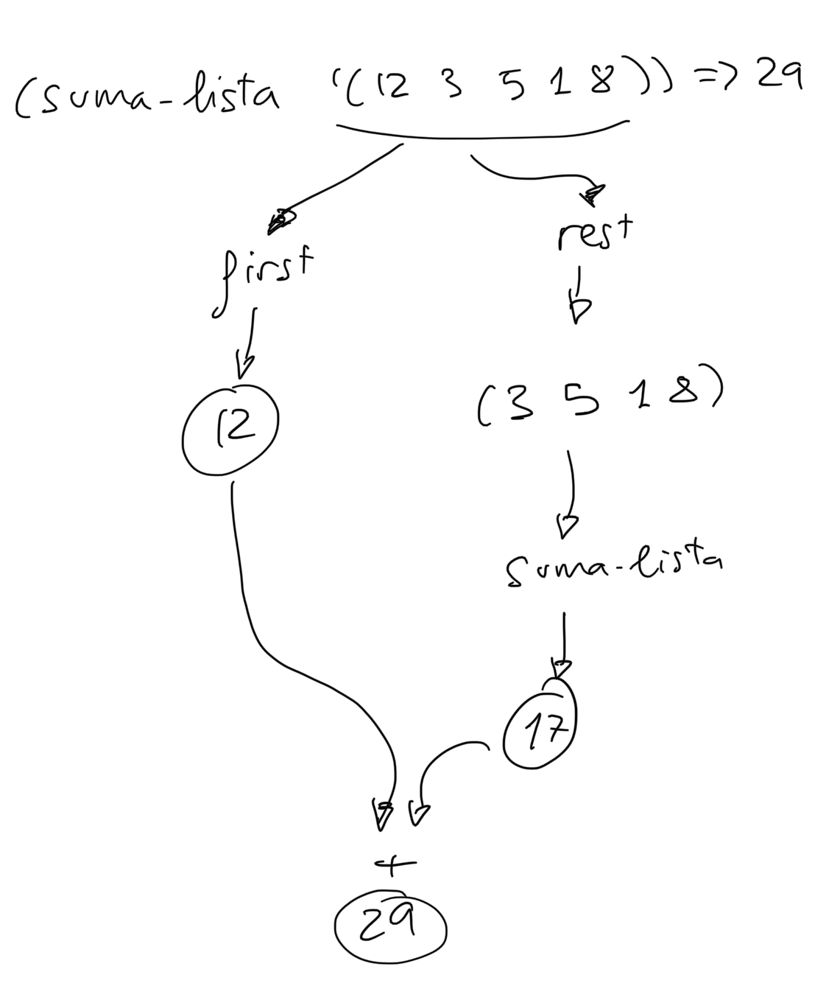
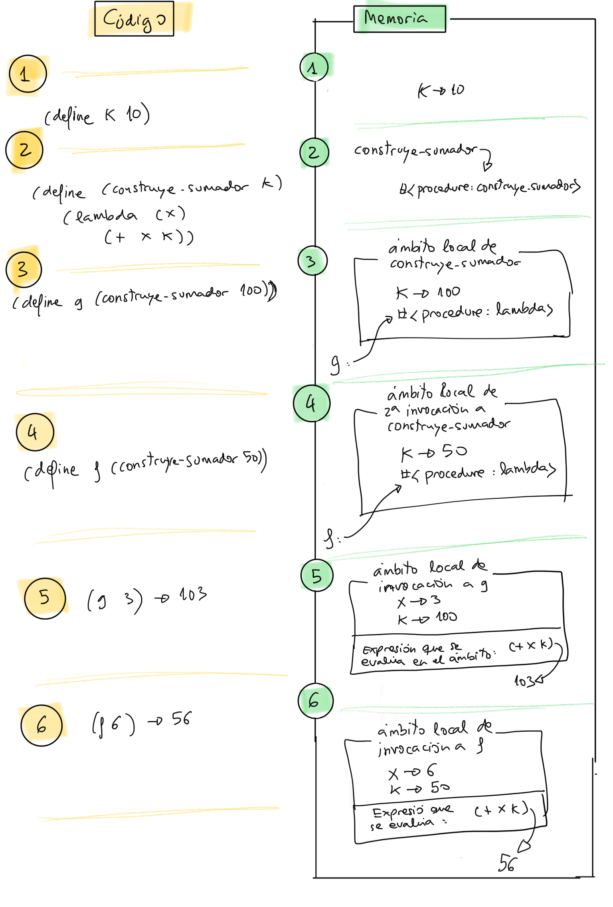

Tema 2: Programación funcional¶
1. El paradigma de Programación Funcional¶
1.1. Pasado y presente del paradigma funcional¶
1.1.1. Definición y características¶
En una definición muy breve y concisa la programación funcional define un programa de la siguiente forma:
Definición de programa funcional
En programación funcional un programa es un conjunto de funciones matemáticas que convierten unas entradas en unas salidas, sin ningún estado interno y ningún efecto lateral.
Hablaremos más adelante de la no existencia de estado interno (variables en las que se guardan y se modifican valores) y de la ausencia de efectos laterales. Avancemos que estas son también características de la programación declarativa (frente a la programación tradicional imperativa que es la que se utiliza en lenguajes como C o Java). En este sentido, la programación funcional es un tipo concreto de programación declarativa.
Las características principales del paradigma funcional son:
- Definiciones de funciones matemáticas puras, sin estado interno ni efectos laterales
- Valores inmutables
- Uso profuso de la recursión en la definición de las funciones
- Uso de listas como estructuras de datos fundamentales
- Funciones como tipos de datos primitivos: expresiones lambda y funciones de orden superior
Explicaremos estas propiedades a continuación.
1.1.2. Orígenes históricos¶
En los años 30, junto con la máquina de Turing, se propusieron distintos modelos computacionales equivalentes que formalizaban el concepto de algoritmo. Uno de estos modelos fue el denominado Cálculo lambda propuesto por Alonzo Church en los años 30 y basado en la evaluación de expresiones matemáticas. En este formalismo los algoritmos se expresan mediante funciones matemáticas en las que puede ser usada la recursión. Una función matemática recibe parámetros de entrada y devuelve un valor. La evaluación de la función se realiza evaluando sus expresiones matemáticas mediante la sustitución de los parámetros formales por los valores reales que se utilizan en la invocación (el denominado modelo de sustitución que veremos más adelante).
El cálculo lambda es un formalismo matemático, basado en operaciones abstractas. Dos décadas después, cuando los primeros computadores electrónicos estaban empezando a utilizarse en grandes empresas y en universidades, este formalismo dio origen a algo mucho más tangible y práctico: un lenguaje de alto nivel, mucho más expresivo que el ensamblador, con el que expresar operaciones y funciones que pueden ser definidas y evaluadas en el computador, el lenguaje de programación Lisp.
1.1.3. Historia y características del Lisp¶
- Lisp es el primer lenguaje de programación de alto nivel basado en el paradigma funcional.
- Creado en 1958 por John McCarthy.
- Lisp fue en su época un lenguaje revolucionario que introdujo nuevos conceptos de programación no existentes entonces: funciones como objetos primitivos, funciones de orden superior, polimorfismo, listas, recursión, símbolos, homogeneidad de datos y programas, bucle REPL (Read-Eval-Print Loop)
- La herencia del Lisp llega a lenguajes derivados de él (Scheme, Golden Common Lisp) y a nuevos lenguajes de paradigmas no estrictamente funcionales, como C#, Python, Ruby, Objective-C o Scala.
Lisp fue el primer lenguaje de programación interpretado, con muchas características dinámicas que se ejecutan en tiempo de ejecución (run-time). Entre estas características podemos destacar la gestión de la memoria (creación y destrucción automática de memoria reservada para datos), la detección de excepciones y errores en tiempo de ejecución o la creación en tiempo de ejecución de funciones anónimas (expresiones lambda). Todas estas características se ejecutan mediante un sistema de tiempo de ejecución (runtime system) presente en la ejecución de los programas. A partir del Lisp muchos otros lenguajes han usado estas características de interpretación o de sistemas de tiempo de ejecución. Por ejemplo, lenguajes como BASIC, Python, Ruby o JavaScript son lenguajes interpretados. Y lenguajes como Java o C# tienen una avanzada plataforma de tiempo de ejecución con soporte para la gestión de la memoria dinámica (recolección de basura, garbage collection) o la compilación just in time.
Lisp no es un lenguaje exclusivamente funcional. Lisp se diseñó con el objetivo de ser un lenguaje de alto nivel capaz de resolver problemas prácticos de Inteligencia Artificial, no con la idea de ser un lenguaje formal basado un único modelo de computación. Por ello en Lisp (y en Scheme) existen primitivas que se salen del paradigma funcional puro y permiten programar de formar imperativa (no declarativa), usando mutación de estado y pasos de ejecución.
Sin embargo, durante la primera parte de la asignatura en la que estudiaremos la programación funcional, no utilizaremos las instrucciones imperativas de Scheme sino que escribiremos código exclusivamente funcional.
1.1.4. Lenguajes de programación funcional¶
En los años 60 la programación funcional definida por el Lisp fue dominante en departamentos de investigación en Inteligencia Artificial (MIT por ejemplo). En los años 70, 80 y 90 se fue relegando cada vez más a los nichos académicos y de investigación; en la empresa se impusieron los lenguajes imperativos y orientados a objetos.
En la primera década del 2000 han aparecido lenguajes que evolucionan de Lisp y que resaltan sus aspectos funcionales, aunque actualizando su sintaxis. Destacamos entre ellos:
También hay una tendencia desde mediados de la década de 2000 de incluir aspectos funcionales como las expresiones lambda o las funciones de orden superior en lenguajes imperativos orientados a objetos, dando lugar a lenguajes multi-paradigma:
Por último, en la década del 2010 también se ha hecho popular un lenguaje exclusivamente funcional como Haskell. Este lenguaje, a diferencia de Scheme y de otros lenguajes multi-paradigma, no tienen ningún elemento imperativo y consigue que todas sus expresiones sean puramente funcionales.
1.1.5. Aplicaciones prácticas de la programación funcional¶
En la actualidad el paradigma funcional es un paradigma de moda, como se puede comprobar observando la cantidad de artículos, charlas y blogs en los que se habla de él, así como la cantidad de lenguajes que están aplicando sus conceptos. Por ejemplo, solo como muestra, a continuación puedes encontrar algunos enlaces a charlas y artículos interesantes publicados recientemente sobre programación funcional:
- Lupo Montero - Introducción a la programación funcional en JavaScript (Blog)
- Andrés Marzal - Por qué deberías aprender programación funcional ya mismo (Charla en YouTube)
- Mary Rose Cook - A practical introduction to functional programming (Blog)
- Ben Christensen - Functional Reactive Programming in the Netflix API (Charla en InfoQ)
El auge reciente de estos lenguajes y del paradigma funcional se debe a varios factores, entre ellos que es un paradigma que facilita:
- la programación de sistemas concurrentes, con múltiples hilos de ejecución o con múltiples computadores ejecutando procesos conectados concurrentes.
- la definición y composición de múltiples operaciones sobre streams de forma muy concisa y compacta, aplicable a la programación de sistemas distribuidos en Internet.
- la programación interactiva y evolutiva.
1.1.5.1. Programación de sistemas concurrentes¶
Veremos más adelante que una de las características principales de la programación funcional es que no se usa la mutación (no se modifican los valores asignados a variables ni parámetros). Esta propiedad lo hace un paradigma excelente para implementar programas concurrentes, en los que existen múltiples hilos de ejecución. La programación de sistemas concurrentes es muy complicada con el paradigma imperativo tradicional, en el que la modificación del estado de una variable compartida por más de un hilo puede provocar condiciones de carrera y errores difícilmente localizables y reproducibles.
Como dice Bartosz Milewski, investigador y teórico de ciencia de computación, en su respuesta en Quora a la pregunta ¿por qué a los ingenieros de software les gusta la programación funcional?:
Bartosz Milewski: ¿Por qué es popular la programación funcional?
Porque es la única forma práctica de escribir programas concurrentes. Intentar escribir programas concurrentes en lenguajes imperativos, no sólo es difícil, sino que lleva a bugs que son muy difíciles de descubrir, reproducir y arreglar. En los lenguajes imperativos y, en particular, en los lenguajes orientados a objetos se ocultan las mutaciones y se comparten datos sin darse cuenta, por lo que son extremadamente propensos a los errores de concurrencia producidos por las condiciones de carrera.
1.1.5.2. Definición y composición de operaciones sobre streams¶
El paradigma funcional ha originado un estilo de programación sobre
streams de datos, en el que se concatenan operaciones como filter
o map para definir de forma sencilla procesos y transformaciones
asíncronas aplicables a los elementos del stream. Este estilo de
programación ha hecho posible nuevas ideas de programación, como la
programación reactiva, basada en eventos, o los futuros o
promesas muy utilizados en lenguajes muy populares como JavaScript
para realizar peticiones asíncronas a servicios web.
Por ejemplo, en el artículo Exploring the virtues of microservices with Play and Akka se explica con detalle las ventajas del uso de lenguajes y primitivas para trabajar con sistemas asíncronos basados en eventos en servicios como Tumblr o Netflix.
Otro ejemplo es el uso de Scala en Tumblr con el que se consigue crear código que no tiene estado compartido y que es fácilmente paralelizable entre los más de 800 servidores necesarios para atender picos de más de 40.000 peticiones por segundo:
Uso de Scala en Tumblr
Scala promueve que no haya estado compartido. El estado mutable se evita usando sentencias en Scala. No se usan máquinas de estado de larga duración. El estado se saca de la base de datos, se usa, y se escribe de nuevo en la base de datos. La ventaja principal es que los desarrolladores no tienen que preocuparse sobre hilos o bloqueos.
1.1.5.3. Programación evolutiva¶
En la metodología de programación denominada programación evolutiva o iterativa los programas complejos se construyen a base de ir definiendo y probando elementos computacionales cada vez más complicados. Los lenguajes de programación funcional encajan perfectamente en esta forma de construir programas.
Como Abelson y Sussman comentan en el libro Structure and Implementation of Computer Programs (SICP):
Abelson y Sussman sobre la programación incremental
En general, los objetos computacionales pueden tener estructuras muy complejas, y sería extremadamente inconveniente tener que recordar y repetir sus detalles cada vez que queremos usarlas. En lugar de ello, se construyen programas complejos componiendo, paso a paso, objetos computacionales de creciente complejidad.
El intérprete hace esta construcción paso-a-paso de los programas particularmente conveniente porque las asociaciones nombre-objeto se pueden crear de forma incremental en interacciones sucesivas. Esta característica favorece el desarrollo y prueba incremental de programas, y es en gran medida responsable del hecho de que un programa Lisp consiste normalmente de un gran número de procedimientos relativamente simples.
No hay que confundir una metodología de programación con un paradigma de programación. Una metodología de programación proporciona sugerencias sobre cómo debemos diseñar, desarrollar y mantener una aplicación que va a ser usada por usuarios finales. La programación funcional se puede usar con múltiples metodologías de programación, debido a que los programas resultantes son muy claros, expresivos y fáciles de probar.
1.2. Evaluación de expresiones y definición de funciones¶
En la asignatura usaremos Scheme como primer lenguaje en el que exploraremos la programación funcional.
En el seminario de Scheme que se imparte en prácticas se estudian en más profundidad los conceptos más importantes del lenguaje: tipos de datos, operadores, estructuras de control, intérprete, etc.
1.2.1 Evaluación de expresiones¶
Empezamos este apartado viendo cómo se definen y evalúan expresiones Scheme. Y después veremos cómo construir nuevas funciones.
Scheme es un lenguaje que viene del Lisp. Una de sus características principales es que las expresiones se construyen utilizando paréntesis.
Ejemplos de expresiones en Scheme, junto con el resultado de su ejecución:
racket
2 ; ⇒ 2
(+ 2 3) ; ⇒ 5
(+) ; ⇒ 0
(+ 2 4 5 6) ; ⇒ 17
(+ (* 2 3) (- 3 1)) ; ⇒ 8
En programación funcional en lugar de decir "ejecutar una expresión" se dice "evaluar una expresión", para reforzar la idea de que se tratan de expresiones matemáticas que siempre devuelven uno y sólo un resultado.
Las expresiones se definen con una notación prefija: el primer elemento después del paréntesis de apertura es el operador de la expresión y el resto de elementos (hasta el paréntesis de cierre) son sus operandos.
-
Por ejemplo, en la expresión
(+ 2 4 5 6)el operador es el símbolo+que representa función suma y los operandos son los números 2, 4, 5 y 6. -
Puede haber expresiones que no tengan operandos, como el ejemplo
(+), cuya evaluación devuelve 0.
Una idea fundamental de Lisp y Scheme es que los paréntesis se evalúan de dentro a fuera. Por ejemplo, la expresión
racket
(+ (* 2 3) (- 3 (/ 12 3)))
que devuelve 5, se evalúa así:
racket
(+ (* 2 3) (- 3 (/ 12 3))) ⇒
(+ 6 (- 3 (/ 12 3))) ⇒
(+ 6 (- 3 4)) ⇒
(+ 6 -1) ⇒
5
La evaluación de cada expresión devuelve un valor que se utiliza para continuar calculando la expresión exterior. En el caso anterior
- primero se evalúa la expresión
(* 2 3)que devuelve 6, - después se evalúa
(/ 12 3)que devuelve 4, - después se evalúa
(- 3 4)que devuelve -1 - y por último se evalúa
(+ 6 -1)que devuelve 5
Cuando se evalúa una expresión en el intérprete de Scheme el resultado aparece en la siguiente línea.
1.2.2. Definición de funciones¶
En programación funcional las funciones son similares a las funciones matemáticas: reciben parámetros y devuelven siempre un único resultado de operar con esos parámetros.
Por ejemplo, podemos definir la función (cuadrado x) que devuelve el
cuadrado de un número que pasamos como parámetro:
racket
(define (cuadrado x)
(* x x))
Después del nombre de la función se declaran sus argumentos. El número
de argumentos de una función se denomina aridad de la función. Por
ejemplo, la función cuadrado es una función de aridad 1, o unaria.
Después de declarar los parámetros, se define el cuerpo de la
función. Es una expresión que se evaluará con el valor que se pase
como parámetro. En el caso anterior la expresión es (* x x) y
multiplicará el parámetro por si mismo.
Hay que hacer notar que en Scheme no existe la palabra clave return,
sino que las funciones siempre se definen con una única expresión cuya
evaluación es el resultado que se devuelve.
Una vez definida la función cuadrado podemos usarla de la misma
forma que las funciones primitivas de Scheme:
racket
(cuadrado 10) ; ⇒ 100
(cuadrado (+ 10 (cuadrado (+ 2 4)))) ; ⇒ 2116
La evaluación de la última expresión se hace de la siguiente forma:
racket
(cuadrado (+ 10 (cuadrado (+ 2 4)))) ⇒
(cuadrado (+ 10 (cuadrado 6))) ⇒
(cuadrado (+ 10 36)) ⇒
(cuadrado 46) ⇒
2116
1.2.3. Definición de funciones auxiliares¶
Las funciones definidas se pueden utilizar a su vez para construir otras funciones.
Lo habitual en programación funcional es definir funciones muy pequeñas e ir construyendo funciones cada vez de mayor nivel usando las anteriores.
1.2.3.1. Ejemplo: suma de cuadrados¶
Por ejemplo, supongamos que tenemos que definir una función que devuelva la suma del cuadrado de dos números. Podríamos definirla escribiendo la expresión completa, pero queda una definición poco legible.
```racket ; Definición poco legible de la suma de cuadrados
(define (suma-cuadrados x y) (+ ( x x) ( y y))) ```
Podemos hacer una definición mucho más legible si usamos la función
cuadrado definida anteriormente:
```racket ; Definición de suma de cuadrados más legible. ; Usamos la función auxiliar 'cuadrado'
(define (cuadrado x) (* x x))
(define (suma-cuadrados x y) (+ (cuadrado x) (cuadrado y))) ```
Esta segunda definición es mucho más expresiva. Leyendo el código queda muy claro qué es lo que queremos hacer.
1.2.3.2. Ejemplo: tiempo de impacto¶
Veamos otro ejemplo de uso de funciones auxiliares. Supongamos que estamos programando un juego de guerra de barcos y submarinos, en el que utilizamos las coordenadas del plano para situar todos los elementos de nuestra flota.
Supongamos que necesitamos calcular el tiempo que tarda un torpedo en
llegar desde una posición (x1, y1) a otra (x2, y2). Suponemos que
la velocidad del torpedo es otro parámetro v.
¿Cómo calcularíamos este tiempo de impacto?
La forma menos correcta de hacerlo es definir todo el cálculo en una única expresión. Como en programación funcional las funciones deben definirse con una única expresión debemos realizar todo el cálculo en forma de expresiones anidadas, unas dentro de otras. Esto construye una función que calcula bien el resultado. El problema que tiene es que es muy difícil de leer y entender para un compañero (o para nosotros mismos, cuando pasen unos meses):
```racket ; ; Definición incorrecta: muy poco legible ; ; La función tiempo-impacto devuelve el tiempo que tarda ; en llegar un torpedo a la velocidad v desde la posición ; (x1, y1) a la posición (x2, y2) ;
(define (tiempo-impacto x1 y1 x2 y2 v) (/ (sqrt (+ ( (- x2 x1) (- x2 x1)) ( (- y2 y1) (- y2 y1)))) v)) ```
La función anterior hace bien el cálculo pero es muy complicada de modificar y de entender.
La forma más correcta de definir la función sería usando varias funciones auxiliares. Fíjate que es muy importante también poner los nombres correctos a cada función, para entender qué hace. Scheme es un lenguaje débilmente tipado y no tenemos la ayuda de los tipos que nos dan más contexto de qué es cada parámetro y qué devuelve la función.
```racket ; Definición correcta, modular y legible de la función tiempo-impacto
; ; La función 'cuadrado' devuelve el cuadrado de un número ;
(define (cuadrado x) (* x x))
; ; La función 'distancia' devuelve la distancia entre dos ; coordenadas (x1, y1) y (x2, y2) ;
(define (distancia x1 y1 x2 y2) (sqrt (+ (cuadrado (- x2 x1)) (cuadrado (- y2 y1)))))
; ; La función 'tiempo' devuelve el tiempo que ; tarda en recorrer un móvil una distancia d a un velocidad v ;
(define (tiempo distancia velocidad) (/ distancia velocidad))
; ; La función 'tiempo-impacto' devuelve el tiempo que tarda ; en llegar un torpedo a la velocidad v desde la posición ; (x1, y1) a la posición (x2, y2) ;
(define (tiempo-impacto x1 y1 x2 y2 velocidad) (tiempo (distancia x1 y1 x2 y2) velocidad)) ```
En esta segunda versión definimos más funciones, pero cada una es
mucho más legible. Además las funciones como cuadrado, distancia o
tiempo las vamos a poder reutilizar para otros cálculos.
1.2.4. Funciones puras¶
A diferencia de lo que hemos visto en programación imperativa, en programación funcional no es posible definir funciones con estado local. Las funciones que se definen son funciones matemáticas puras, que cumplen las siguientes condiciones:
- No modifican los parámetros que se les pasa
- Devuelven un único resultado
- No tienen estado local ni el resultado depende de un estado exterior mutable
Esta última propiedad es muy importante y quiere decir que la función siempre devuelve el mismo valor cuando se le pasan los mismos parámetros.
Las funciones puras son muy fáciles de entender porque no es necesario tener en cuenta ningún contexto a la hora de describir su funcionamiento. El valor devuelto únicamente depende de los parámetros de entrada.
Por ejemplo, funciones matemáticas como suma, resta, cuadrado, sin, cos, etc. cumplen esta propiedad.
1.2.5. Composición de funciones¶
Una idea fundamental de la programación funcional es la composición de funciones que transforman unos datos de entrada en otros de salida. Es una idea muy actual, porque es la forma en la que están planteados muchos algoritmos de procesamiento de datos en inteligencia artificial.
Por ejemplo, podemos representar de la siguiente forma el algoritmo que maneja un vehículo autónomo:

Las cajas representa funciones que transforman los datos de entrada (imágenes tomadas por las cámaras del vehículo) en los datos de salida (acciones a realizar sobre la dirección y el motor del vehículo). Las funciones intermedias representan transformaciones que se realizan sobre los datos de entrada y obtienen los datos de salida.
En un lenguaje de programación funcional como Scheme el diagrama anterior se escribiría con el siguiente código:
racket
(define (conduce-vehiculo imagenes)
(obten-acciones
(reconoce
(filtra
(obten-caracteristicas imagenes)))))
Veremos más adelante que las expresiones en Scheme se evalúan de dentro a fuera y que tienen notación prefija. El resultado de cada función constituye la entrada de la siguiente.
En el caso de la función conduce-vehiculo primero se obtienen las
características de las imágenes, después se filtran, después se
reconoce la escena y, por último, se obtienen las acciones para
conducir el vehículo.
1.3. Programación declarativa vs. imperativa¶
Hemos dicho que la programación funcional es un estilo de programación declarativa, frente a la programación tradicional de los lenguajes denominados imperativos. Vamos a explicar esto un poco más.
1.3.1. Programación declarativa¶
Empecemos con lo que conocemos todos: un programa imperativo. Se trata de un conjunto de instrucciones que se ejecutan una tras otra (pasos de ejecución) de forma secuencial. En la ejecución de estas instrucciones se van cambiando los valores de las variables y, dependiendo de estos valores, se modifica el flujo de control de la ejecución del programa.
Para entender el funcionamiento de un programa imperativo debemos imaginar toda la evolución del programa, los pasos que se ejecutan y cuál es el flujo de control en función de los cambios de los valores en las variables.
En la programación declarativa, sin embargo, utilizamos un paradigma totalmente distinto. Hablamos de programación declarativa para referirnos a lenguajes de programación (o sentencias de código) en los que se declaran los valores, objetivos o características de los elementos del programa y en cuya ejecución no existe mutación (modificación de valores de variables) ni secuencias de pasos de ejecución.
De esta forma, la ejecución de un programa declarativo tiene que ver más con algún modelo formal o matemático que con un programa tradicional imperativo. Define un conjunto de reglas y definiciones de estilo matemático.
La programación declarativa no es exclusiva de los lenguajes funcionales. Existen muchos lenguajes no funcionales con características declarativas. Por ejemplo Prolog, en el que un programa se define como un conjunto de reglas lógicas y su ejecución realiza una deducción lógica matemática que devuelve un resultado. En dicha ejecución no son relevantes los pasos internos que realiza el sistema sino las relaciones lógicas entre los datos y los resultados finales.
Un ejemplo claro de programación declarativa es una hoja de cálculo. Las celdas contiene valores o expresiones matemáticas que se actualizan automáticamente cuando cambiamos los valores de entrada. La relación entre valores y resultados es totalmente matemática y para su cálculo no tenemos que tener en cuenta pasos de ejecución. Evidente, por debajo de la hoja de cálculo existe un programa que realiza el su cálculo de la hoja, pero cuando estamos usándola no nos preocupa esa implementación. Podemos no preocuparnos de ella y usar únicamente el modelo matemático definido en la hoja.
Otro ejemplo muy actual de programación declarativa es SwiftUI, el nuevo API creado por Apple para definir las interfaces de usuario de las aplicaciones iOS.

En el código de la imagen vemos una descripción de cómo está definida la aplicación: una lista de lugares (landmarks) apilada verticalmente. Para cada lugar se define su imagen, su texto, y una estrella si el lugar es favorito.
El código es declarativo porque no hay pasos de ejecución para definir la interfaz. No existe un bucle que va añadiendo elementos a la interfaz. Vemos una declaración de cómo la interfaz va estar definida. El compilador del lenguaje y el API son los responsables de construir esa declaración y mostrar la interfaz tal y como nosotros queremos.
1.3.1.1. Declaración de funciones¶
La programación funcional utiliza un estilo de programación declarativo. Declaramos funciones en las que se transforman unos datos de entrada en unos datos de salida. Veremos que esta transformación se realiza mediante la evaluación de expresiones, sin definir valores intermedios, ni variables auxiliares, ni pasos de ejecución. Únicamente se van componiendo llamadas a funciones auxiliares que construyen el valor resultante.
Tal y como ya hemos visto, el siguiente ejemplo es una declaración en Scheme de una función que toma como entrada un número y devuelve su cuadrado:
racket
(define (cuadrado x)
(* x x))
En el cuerpo de la función cuadrado vemos que no se utiliza ninguna
variable auxiliar, sino que únicamente se llama a la función *
(multiplicación) pasando el valor de x. El valor resultante es el
que se devuelve.
Por ejemplo, si llamamos a la función pasándole el parámetro 4
devuelve el resultado de multiplicar 4 por si mismo, 16.
racket
(cuadrado 4) ; ⇒ 16
1.3.2. Programación imperativa¶
Repasemos un algunas características propias de la programación imperativa que no existen en la programación funcional. Son características a las que estamos muy habituados porque son propias de los lenguajes más populares y con los que hemos aprendido a programar (C, C++, Java, python, etc.)
- Pasos de ejecución
- Mutación
- Efectos laterales
- Estado local mutable en las funciones
Veremos que, aunque parece imposible, es posible programar sin utilizar estas características. Lo demuestran lenguajes de programación funcional como Haskell, Clojure o el propio Scheme.
1.3.2.1. Pasos de ejecución¶
Una de las características básicas de la programación imperativa es la utilización de pasos de ejecución. Por ejemplo, en C podemos realizar los siguientes pasos de ejecución:
c
int a = cuadrado(8);
int b = doble(a);
int c = cuadrado(b);
return c
O, por ejemplo, si queremos filtrar y procesar una lista de pedidos en Swift podemos hacerlo en dos sentencias:
swift
filtrados = filtra(pedidos);
procesados = procesa(filtrados);
return procesados;
Sin embargo, en programación funcional (por ejemplo, Scheme) no existen pasos de ejecución separados por sentencias. Como hemos visto antes, la forma típica de expresar las instrucciones anteriores es componer todas las operaciones en una única instrucción:
racket
(cuadrado (doble (cuadrado 8))) ; ⇒ 16384
El segundo ejemplo lo podemos componer de la misma forma:
racket
(procesa (filtra pedidos))
1.3.2.2. Mutación¶
En los lenguajes imperativos es común modificar el valor de las variables en los pasos de ejecución:
java
int x = 10;
int x = x + 1;
La expresión x = x + 1 es una expresión de
asignación
que modifica el valor anterior de una variable por un nuevo valor. El
estado de las variables (su valor) cambia con la ejecución de los
pasos del programa.
A esta asignación que modifica un valor ya existente se le denomina asignación destructiva o mutación.
En programación imperativa también se puede modificar (mutar) el valor de componentes de estructuras de datos, como posiciones de un array, de una lista o de un diccionario.
En programación funcional, por contra, las definiciones son inmutables, y una vez asignado un valor a un identificador no se puede modificar éste. En programación funcional no existe sentencia de asignación que pueda modificar un valor ya definido. Se entienden las variables como variables matemáticas, no como referencias a una posiciones de memoria que puede ser modificada.
Por ejemplo, la forma especial define en Scheme crea un nuevo
identificador y le da el valor definido de forma permanente. Si
escribimos el siguiente código en un programa en Scheme:
```racket
lang racket¶
(define a 12) (define a 200) ```
tendremos el siguiente error:
text
module: identifier already defined in: a
Nota
En el intérprete REPL del DrRacket sí que podemos definir más de una vez la misma función o identificador. Se ha diseñado así para facilitar el uso del intérprete para la prueba de expresiones en Scheme.
En los lenguajes de programación imperativos es habitual introducir también sentencias declarativas. Por ejemplo, en el siguiente código Java las líneas 1 y 3 las podríamos considerar declarativas y las 2 y 4 imperativas:
text
1. int x = 1;
2. x = x+1;
3. int y = x+1;
4. y = x;
1.3.2.3. Mutación y efectos laterales¶
En programación imperativa es habitual también trabajar con referencias y hacer que más de un identificador referencie el mismo valor. Esto produce la posibilidad de que la mutación del valor a través de uno de los identificadores produzca un efecto lateral (side effect en inglés) en el que el valor de un identificador cambia sin ejecutar ninguna expresión en la que se utilice explícitamente el propio identificador.
Por ejemplo, en la mayoría de lenguajes orientados a objetos los identificadores guardan referencias a objetos. De forma que si asignamos un objeto a más de un identificador, todos los identificadores están accediendo al mismo objeto. Si mutamos algún valor del objeto a través de un identificador provocamos un efecto lateral en los otros identificadores.
Por ejemplo, lo siguiente es un ejemplo de una mutación en programación imperativa, en la que se modifican los atributos de un objeto en Java:
java
Point2D p1 = new Point2D(3.0, 2.0); // creamos un punto 2D con coordX=3.0 y coordY=2.0
p1.getCoordX(); // la coord x de p2 es 3.0
p1.setCoordX(10.0);
p1.getCoordX(); // la coord x de p1 es 10.0
Si el objeto está asignado a más de una variable tendremos el efecto lateral (side effect) en el que el dato guardado en una variable cambia después de una sentencia en la que no se ha usado esa variable:
java
Point2D p1 = new Point2D(3.0, 2.0); // la coord x de p1 es 3.0
p1.getCoordX(); // la coord x de p1 es 3.0
Point2D p2 = p1;
p2.setCoordX(10.0);
p1.getCoordX(); // la coord x de p1 es 10.0, sin que ninguna sentencia haya modificado directamente p1
El mismo ejemplo anterior, en C:
```c typedef struct { float x; float y; }TPunto;
TPunto p1 = {3.0, 2.0}; printf("Coordenada x: %f", p1.x); // 3.0 TPunto *p2 = &p1; p2->x = 10.0; printf("Coordenada x: %f", p1.x); // 10.0 Efecto lateral ```
Los efectos laterales son los responsables de muchos bugs y hay que ser muy consciente de su uso. Son especialmente complicados de depurar los bugs debidos a efectos laterales en programas concurrentes con múltiples hilos de ejecución, en los que varios hilos pueden acceder a las mismas referencias y provocar condiciones de carrera.
Por otro lado, también existen situaciones en las que su utilización permite ganar mucha eficiencia porque podemos definir estructuras de datos en el que los valores son compartidos por varias referencias y modificando un único valor se actualizan de forma instantánea esas referencias.
En los lenguajes en los que no existe la mutación no se producen efectos laterales, ya que no es posible modificar el valor de una variable una vez establecido. Los programas que escribamos en estos lenguajes van a estar libres de este tipo de bugs y van a poder ser ejecutado sin problemas en hilos de ejecución concurrente.
Por otro lado, la ausencia de mutación hace que sean algo más costosas ciertas operaciones, como la construcción de estructuras de datos nuevas a partir de estructuras ya existentes. Veremos, por ejemplo, que la única forma de añadir un elemento al final de una lista será construir una lista nueva con todos los elementos de la lista original y el nuevo elemento. Esta operación tiene un coste lineal con el número de elementos de la lista. Sin embargo, en una lista en la que pudiéramos utilizar la mutación podríamos implementar esta operación con coste constante.
1.3.2.4. Estado local mutable¶
Otra característica de la programación imperativa es lo que se denomina estado local mutable en funciones, procedimientos o métodos. Se trata la posibilidad de que una invocación a un método o una función modifique un cierto estado, de forma que la siguiente invocación devuelva un valor distinto. Es una característica básica de la programación orientada a objetos, donde los objetos guardan valores que se modifican con la invocaciones a sus métodos.
Por ejemplo, en Java, podemos definir un contador que incrementa su valor:
```java public class Contador { int c;
1 2 3 4 5 6 7 8 | |
} ```
Cada llamada al método valor() devolverá un valor distinto:
java
Contador cont = new Contador(10);
cont.valor(); // 11
cont.valor(); // 12
cont.valor(); // 13
También se pueden definir funciones con estado local mutable en C:
```c int function contador () { static int c = 0;
1 2 | |
} ```
Cada llamada a la función contador() devolverá un valor distinto:
c
contador(); // 1
contador(); // 2
contador(); // 3
Por el contrario, los lenguajes funcionales tienen la propiedad de transparencia referencial: es posible sustituir cualquier aparición de una expresión por su resultado sin que cambie el resultado final del programa. Dicho de otra forma, en programación funcional, una función siempre devuelve el mismo valor cuando se le llama con los mismos parámetros. Las funciones no modifican ningún estado, no acceden a ninguna variable ni objeto global y modifican su valor.
1.3.2.5. Resumen¶
Un resumen de las características fundamentales de la programación declarativa frente a la programación imperativa. En los siguientes apartados explicaremos más estas características.
Características de la programación declarativa
- Variable = nombre dado a un valor (declaración)
- En lugar de pasos de ejecución se utiliza la composición de funciones
- No existe asignación ni cambio de estado
- No existe mutación, se cumple la transferencia referencial: dentro de un mismo ámbito todas las ocurrencias de una variable y las llamadas a funciones devuelven el mismo valor
Características de la programación imperativa
- Variable = nombre de una zona de memoria
- Asignación
- Referencias
- Pasos de ejecución
1.4. Modelo de computación de sustitución¶
Un modelo computacional es un formalismo (conjunto de reglas) que definen el funcionamiento de un programa. En el caso de los lenguajes funcionales basados en la evaluación de expresiones, el modelo computacional define cuál será el resultado de evaluar una expresión.
El modelo de sustitución es un modelo muy sencillo que permite definir la semántica de la evaluación de expresiones en lenguajes funcionales como Scheme. Se basa en una versión simplificada de la regla de reducción del cálculo lambda.
Es un modelo basado en la reescritura de unos términos por otros. Aunque se trata de un modelo abstracto, sería posible escribir un intérprete que, basándose en este modelo, evalúe expresiones funcionales.
Supongamos un conjunto de definiciones en Scheme:
```racket (define (doble x) (+ x x))
(define (cuadrado y) (* y y))
(define (f z) (+ (cuadrado (doble z)) 1))
(define a 2) ```
Supongamos que, una vez realizadas esas definiciones, se evalúa la siguiente expresión:
racket
(f (+ a 1))
¿Cuál será su resultado? Si lo hacemos de forma intuitiva podemos
pensar que 37. Si lo comprobamos en el intérprete de Scheme veremos
que devuelve 37. ¿Hemos seguido algunas reglas específicas? ¿Qué
reglas son las que sigue el intérprete? ¿Podríamos implementar
nosotros un intérprete similar? Sí, usando las reglas del modelo de
sustitución.
El modelo de sustitución define cuatro reglas sencillas para evaluar una expresión. Llamemos a la expresión e. Las reglas son las siguientes:
- Si e es un valor primitivo (por ejemplo, un número), devolvemos ese mismo valor.
- Si e es un identificador, devolvemos su valor asociado con un
define(se lanzará un error si no existe ese valor). - Si e es una expresión del tipo (f arg1 ... argn), donde f es
el nombre de una función primitiva (
+,-, ...), evaluamos uno a uno los argumentos arg1 ... argn (con estas mismas reglas) y evaluamos la función primitiva con los resultados.
La regla 4 tiene dos variantes, dependiendo del orden de evaluación que utilizamos.
Orden aplicativo
- Si e es una expresión del tipo (f arg1 ... argn), donde f es
el nombre de una función definida con un
define, tenemos que evaluar primero los argumentos arg1 ... argn y después sustituir f por su cuerpo, reemplazando cada parámetro formal de la función por el correspondiente argumento evaluado. Después evaluaremos la expresión resultante usando estas mismas reglas.
Orden normal
- Si e es una expresión del tipo (f arg1 ... argn), donde f es
el nombre de una función definida con un
define, tenemos que sustituir f por su cuerpo, reemplazando cada parámetro formal de la función por el correspondiente argumento sin evaluar. Después evaluar la expresión resultante usando estas mismas reglas.
En el orden aplicativo se realizan las evaluaciones antes de realizar las sustituciones, lo que define una evaluación de dentro a fuera de los paréntesis. Cuando se llega a una expresión primitiva se evalúa.
En el orden normal se realizan todas las sustituciones hasta que se tiene una larga expresión formada por expresiones primitivas; se evalúa entonces.
Ambas formas de evaluación darán el mismo resultado en programación funcional. Scheme utiliza el orden aplicativo.
1.4.1. Ejemplo 1¶
Vamos a empezar con un ejemplo sencillo para comprobar cómo se evalúa una misma expresión utilizando ambos modelos de sustitución. Supongamos las siguientes definiciones:
```racket (define (doble x) (+ x x))
(define (cuadrado y) (* y y))
(define a 2) ```
Queremos evaluar la siguiente expresión:
racket
(doble (cuadrado a))
La evaluación utilizando el modelo de sustitución aplicativo, usando paso a paso las reglas anteriores, es la siguiente (en cada línea se indica entre paréntesis la regla usada):
text
(doble (cuadrado a)) ⇒ ; Sustituimos a por su valor (R2)
(doble (cuadrado 2)) ⇒ ; Sustitumos cuadrado por su cuerpo (R4)
(doble (* 2 2)) ⇒ ; Evaluamos (* 2 2) (R3)
(doble 4) ⇒ ; Sustituimos doble por su cuerpo (R4)
(+ 4 4) ⇒ ; Evaluamos (+ 4 4) (R3)
8
Podemos comprobar que en el modelo aplicativo se intercalan las sustituciones de una función por su cuerpo (regla 4) y las evaluaciones de expresiones (regla 3).
Por el contrario, la evaluación usando el modelo de sustitución normal es:
text
(doble (cuadrado a)) ⇒ ; Sustituimos doble por su cuerpo (R4)
(+ (cuadrado a) (cuadrado a) ⇒ ; Sustituimos cuadrado por su cuerpo (R4)
(+ (* a a) (* a a)) ⇒ ; Sustitumos a por su valor (R2)
(+ (* 2 2) (* 2 2)) ⇒ ; Evaluamos (* 2 2) (R3)
(+ 4 (* 2 2)) ⇒ ; Evaluamos (* 2 2) (R3)
(+ 4 4) ⇒ ; Evaluamos (+ 4 4) (R3)
8
Al usar este modelo de evaluación primero se realizan todas las sustituciones (regla 4) y después todas las evaluaciones (regla 3).
Las sustituciones se hacen de izquierda a derecha (de fuera a dentro
de los paréntesis). Primero se sustituye doble por su cuerpo y
después cuadrado.
1.4.2. Ejemplo 2¶
Veamos la evaluación del ejemplo algo más complicado que hemos planteado al comienzo:
```racket (define (doble x) (+ x x))
(define (cuadrado y) (* y y))
(define (f z) (+ (cuadrado (doble z)) 1))
(define a 2) ```
Expresión a evaluar:
racket
(f (+ a 1))
Resultado de la evaluación usando el modelo de sustitución aplicativo:
text
(f (+ a 1)) ⇒ ; Para evaluar f, evaluamos primero su argumento (+ a 1) (R4)
; y sustituimos a por 2 (R2)
(f (+ 2 1)) ⇒ ; Evaluamos (+ 2 1) (R3)
(f 3) ⇒ ; (R4)
(+ (cuadrado (doble 3)) 1) ⇒ ; Sustituimos (doble 3) (R4)
(+ (cuadrado (+ 3 3)) 1) ⇒ ; Evaluamos (+ 3 3) (R3)
(+ (cuadrado 6) 1) ⇒ ; Sustitumos (cuadrado 6) (R4)
(+ (* 6 6) 1) ⇒ ; Evaluamos (* 6 6) (R3)
(+ 36 1) ⇒ ; Evaluamos (+ 36 1) (R3)
37
Y veamos el resultado de usar el modelo de sustitución normal:
text
(f (+ a 1)) ⇒ ; Sustituimos (f (+ a 1))
; por su definición, con z = (+ a 1) (R4)
(+ (cuadrado (doble (+ a 1))) 1) ⇒ ; Sustituimos (cuadrado ...) (R4)
(+ (* (doble (+ a 1))
(doble (+ a 1))) 1) ; Sustituimos (doble ...) (R4)
(+ (* (+ (+ a 1) (+ a 1))
(+ (+ a 1) (+ a 1))) 1) ⇒ ; Evaluamos a (R2)
(+ (* (+ (+ 2 1) (+ 2 1))
(+ (+ 2 1) (+ 2 1))) 1) ⇒ ; Evaluamos (+ 2 1) (R3)
(+ (* (+ 3 3)
(+ 3 3)) 1) ⇒ ; Evaluamos (+ 3 3) (R3)
(+ (* 6 6) 1) ⇒ ; Evaluamos (* 6 6) (R3)
(+ 36 1) ⇒ ; Evaluamos (+ 36 1) (R3)
37
En programación funcional el resultado de evaluar una expresión es el mismo independientemente del tipo de orden. Pero si estamos fuera del paradigma funcional y las funciones tienen estado y cambian de valor entre distintas invocaciones sí que importan si escogemos un orden.
Por ejemplo, supongamos una función (random x) que devuelve un
entero aleatorio entre 0 y x. Esta función no cumpliría el paradigma
funcional, porque devuelve un valor distinto con el mismo parámetro de
entrada.
Evaluamos las siguientes expresiones con orden aplicativo y normal, para comprobar que el resultado es distinto.
racket
(define (zero x) (- x x))
(zero (random 10))
Si evaluamos la última expresión en orden aplicativo:
text
(zero (random 10)) ⇒ ; Evaluamos (random 10) (R3)
(zero 3) ⇒ ; Sustituimos (zero ...) (R4)
(- 3 3) ⇒ ; Evaluamos - (R3)
0
Si lo evaluamos en orden normal:
text
(zero (random 10)) ⇒ ; Sustituimos (zero ...) (R4)
(- (random 10) (random 10)) ⇒ ; Evaluamos (random 10) (R3)
(- 5 3) ⇒ ; Evaluamos - (R3)
2
2. Scheme como lenguaje de programación funcional¶
Ya hemos visto cómo definir funciones y evaluar expresiones en Scheme. Vamos continuar con ejemplos concretos de otras características funcionales características funcionales de Scheme.
En concreto, veremos:
- Símbolos y primitiva
quote - Uso de listas
- Definición de funciones recursivas en Scheme
2.1. Funciones y formas especiales¶
En el seminario de Scheme hemos visto un conjunto de primitivas que podemos utilizar en Scheme.
Podemos clasificar las primitivas en funciones y formas especiales. Las funciones se evalúan usando el modelo de sustitución aplicativo ya visto:
- Primero se evalúan los argumentos y después se sustituye la llamada a la función por su cuerpo y se vuelve a evaluar la expresión resultante.
- Las expresiones siempre se evalúan desde los paréntesis interiores a los exteriores.
Las formas especiales son expresiones primitivas de Scheme que tienen una forma de evaluarse propia, distinta de las funciones.
2.2. Formas especiales en Scheme¶
Veamos la forma de evaluar las distintas formas especiales en Scheme. En estas formas especiales no se aplica el modelo de sustitución, al no ser invocaciones de funciones, sino que cada una se evalúa de una forma diferente.
2.2.1. Forma especial define¶
Sintaxis
racket
(define <identificador> <expresión>)
Evaluación
- Evaluar expresión
- Asociar el valor resultante con el identificador
Ejemplo
racket
(define base 10) ; Asociamos a 'base' el valor 10
(define altura 12) ; Asociamos a 'altura' el valor 12
(define area (/ (* base altura) 2)) ; Asociamos a 'area' el valor 60
2.2.2. Forma especial define para definir funciones¶
Sintaxis
text
(define (<nombre-funcion> <argumentos>)
<cuerpo>)
Evaluación
La semana que viene veremos con más detalle la semántica, y
explicaremos la forma especial lambda que es la que realmente crea
la función. Hoy nos quedamos en la siguiente descripción de alto nivel
de la semántica:
- Crear la función con el cuerpo
- Dar a la función el nombre nombre-función
Ejemplo
racket
(define (factorial x)
(if (= x 0)
1
(* x (factorial (- x 1)))))
2.2.3. Forma especial if¶
Sintaxis
racket
(if <condición> <expresión-true> <expresión-false>)
Evaluación
- Evaluar condición
- Si el resultado es
#tevaluar la expresión-true, en otro caso, evaluar la expresión-false
Ejemplo
```racket (if (> 10 5) (substring "Hola qué tal" (+ 1 1) 4) (/ 12 0))
;; Evaluamos (> 10 5). Como el resultado es #t, evaluamos ;; (substring "Hola qué tal" (+ 1 1) 4), que devuelve "la"
```
Nota
Al ser if una forma especial, no se evalúa utilizando el modelo de
sustitución, sino usando las reglas propias de la forma especial.
Por ejemplo, veamos la siguiente expresión:
racket
(if (> 3 0) (+ 2 3) (/ 1 0)) ; ⇒ 5
Si se evaluara con el modelo
de sustitución se lanzaría un error de división por
cero al intentar evaluar (/ 1 0). Sin embargo, esa expresión no
llega a evaluarse, porque la condición (> 3 0) es cierta y sólo se evalúa
la suma (+ 2 3).
2.2.4. Forma especial cond¶
Sintaxis
racket
(cond
(<exp-cond-1> <exp-consec-1>)
(<exp-cond-2> <exp-consec-2>)
...
(else <exp-consec-else>))
Evaluación
- Se evalúan de forma ordenada todas las exp-cond-i hasta que una de
ellas devuelva
#t - Si alguna exp-cond-i devuelve
#t, se devuelve el valor de la exp-consec-i. - Si ninguna exp-cond-i es cierta, se devuelve el valor resultante de evaluar exp-consec-else.
Ejemplo
```racket (cond ((> 3 4) "3 es mayor que 4") ((< 2 1) "2 es menor que 1") ((= 3 1) "3 es igual que 1") ((> 3 5) "3 es mayor que 2") (else "ninguna condición es cierta"))
;; Se evalúan una a una las expresiones (> 3 4), ;; (< 2 1), (= 3 1) y (> 3 5). Como ninguna de ella ;; es cierta se devuelve la cadena "ninguna condición es cierta". ```
2.2.4.1. Formas especiales and y or¶
Las expresiones lógicas and y or no son funciones, sino formas
especiales. Lo podemos comprobar con el siguiente ejemplo:
racket
(and #f (/ 3 0)) ; ⇒ #f
(or #t (/ 3 0)) ; ⇒ #t
Si and y or fueran funciones, seguirían la regla que hemos visto
de evaluar primero los argumentos y después invocar a la función con
los resultados. Esto produciría un error al evaluar la expresión (/ 3
0), al ser una división por 0.
Sin embargo, vemos que las expresiones no dan error y devuelven un
valor booleano. ¿Por qué? Porque and y or no son funciones, sino
formas especiales que se evalúan de forma diferente a las funciones.
En concreto, and y or van evaluando los argumentos hasta que
encuentran un valor que hace que ya no sea necesario evaluar el resto.
Sintaxis
racket
(and exp1 ... expn)
(or exp1 ... expn)
Evaluación and
- Se evalúa la expresión 1. Si el resultado es
#f, se devuelve#f, en otro caso, se evalúa la siguiente expresión. - Se repite hasta la última expresión, cuyo resultado se devuelve.
Ejemplos and
racket
(and #f (/ 3 0)) ; ⇒ #f
(and #t (> 2 1) (< 5 10)) ; ⇒ #t
(and #t (> 2 1) (< 5 10) (+ 2 3)) ; ⇒ 5
La regla de evaluación de and hace que sea posible que devuelva
resultados no booleanos, como el último ejemplo. Sin embargo, no es
recomendable usarlo de esta forma y en la asignatura no lo vamos a
hacer nunca.
Evaluación or
- Se evalúa la expresión 1. Si el resultado es distinto de
#fse devuelve ese resultado. Si el resultado es#fse evalúa la siguiente expresión. - Se repite hasta la última expresión, cuyo resultado se devuelve.
Ejemplos or
racket
(or #t (/ 3 0)) ; ⇒ #t
(or #f (< 2 10) (> 5 10)) ; ⇒ #t
(or (+ 2 3) (> 5 10)) ; ⇒ 5
Al igual que and, la regla de evaluación de or hace que sea
posible que devuelva resultados no booleanos, como el último
ejemplo. Tampoco es recomendable usarlo de esta forma.
2.3. Forma especial quote y símbolos¶
Sintaxis
racket
(quote <identificador>)
Evaluación
- Se devuelve el identificador sin evaluar (un símbolo).
- Se abrevia en con el carácter
'.
Ejemplos
racket
(quote x) ; el símbolo x
'hola ; el símbolo hola
A diferencia de los lenguajes imperativos, Scheme trata a los identificadores (nombres que se les da a las variables) como datos del lenguaje de tipo symbol. En el paradigma funcional a los identificadores se les denomina símbolos.
Los símbolos son distintos de las cadenas. Una cadena es un tipo de dato compuesto y se guardan en memoria todos y cada uno de los caracteres que la forman. Sin embargo, los símbolos son tipos atómicos, que se representan en memoria con un único valor determinado por el código hash del identificador.
Ejemplos de funciones Scheme con símbolos:
racket
(define x 12)
(symbol? 'x) ; ⇒ #t
(symbol? x) ; ⇒ #f ¿Por qué?
(symbol? 'hola-que<>)
(symbol->string 'hola-que<>)
'mañana
'lápiz ; aunque sea posible, no vamos a usar acentos en los símbolos
; pero sí en los comentarios
(symbol? "hola") ; #f
(symbol? #f) ; #f
(symbol? (first '(hola cómo estás))) ; #t
(equal? 'hola 'hola)
(equal? 'hola "hola")
Como hemos visto anteriormente, un símbolo puede asociarse o ligarse
(bind) a un valor (cualquier dato de primera clase) con la forma
especial define.
racket
(define e 2.71828)
Nota
No es correcto escribir (define 'e 2.71828) porque la forma especial define debe recibir un identificador sin quote.
Cuando escribimos un símbolo en el prompt de Scheme el intérprete lo evalúa y devuelve su valor:
```text
e 2.71828 ```
Los nombres de las funciones (equal?, sin, +, ...) son también
símbolos y Scheme también los evalúa (en un par de semanas hablaremos
de las funciones como objetos primitivos en Scheme):
```text
sin
¶
+
¶
(define (cuadrado x) (* x x)) cuadrado
¶
```
Los símbolos son tipos primitivos del lenguaje: pueden pasarse como parámetros o ligarse a variables.
```text
(define x 'hola) x hola ```
2.4. Forma expecial quote con expresiones¶
Sintaxis
racket
(quote <expresión>)
Evaluación
Si quote recibe una expresión correcta de Scheme (una expresión
entre paréntesis) se devuelve la lista o pareja definida por la
expresión (sin evaluar sus elementos).
Ejemplos
racket
'(1 2 3) ; ⇒ (1 2 3) Una lista
'(+ 1 2 3 4) ; La lista formada por el símbolo + y los números 1 2 3 4
(quote (1 2 3 4)) ; La lista formada por los números 1 2 3 4
'(a b c) ; ⇒ La lista con los símbolos a, b, y c
'(* (+ 1 (+ 2 3)) 5) ; Una lista con 3 elementos, el segundo de ellos otra lista
'(1 . 2) ; ⇒ La pareja (1 . 2)
'((1 . 2) (2 . 3)) ; ⇒ Una lista con las parejas (1 . 2) y (2 . 3)
2.5. Función eval¶
Curiosidad del lenguaje: eval
Racket dispone de la función eval, que permite evaluar expresiones construidas dinámicamente en tiempo de ejecución.
Sintaxis
racket
(eval <expresión>)
Evaluación
La función eval invoca al intérprete para realizar la evaluación de la expresión que se le pasa como parámetro y devuelve el resultado de
dicha evaluación.
Ejemplos
```racket (define a 10) (eval 'a) ; ⇒ 10
(eval '(+ 1 2 3)) ; ⇒ 6
(define lista (list '+ 1 2 3)) (eval lista) ; ⇒ 6 ```
2.6. Listas¶
Otra de las características fundamentales del paradigma funcional es la utilización de listas. Ya hemos visto en el seminario de Scheme las funciones más importantes para trabajar con ellas. Vamos a repasarlas de nuevo en este apartado, antes de ver algún ejemplo de cómo usar la recursión con listas.
Ya hemos visto en dicho seminario que Scheme es un lenguaje débilmente tipado. Una variable o parámetro no se declara de un tipo y puede contener cualquier valor. Sucede igual con las listas: una lista en Scheme puede contener cualquier valor, incluyendo otras listas.
2.6.1. Diferencia entre la función list y la forma especial quote¶
En el seminario de Scheme explicamos que podemos crear listas de forma
dinámica, llamando a la función list y pasándole un número variable
de parámetros que son los elementos que se incluirán en la lista:
racket
(list 1 2 3 4 5) ; ⇒ (1 2 3 4)
(list 'a 'b 'c) ; ⇒ (a b c)
(list 1 'a 2 'b 3 'c #t) ; ⇒ (1 a 2 b 3 c #t)
(list 1 (+ 1 1) (* 2 (+ 1 2))) ; ⇒ (1 2 6)
Las expresiones interiores se evalúan y se llama a la función list
con los valores resultantes.
Otro ejemplo:
racket
(define a 1)
(define b 2)
(define c 3)
(list a b c) ; ⇒ (1 2 3)
Como hemos visto cuando hemos hablado de quote, esta forma especial
también puede construir una lista. Pero lo hace sin evaluar sus
elementos.
Por ejemplo:
racket
'(1 2 3 4) ; ⇒ (1 2 3 4)
(define a 1)
(define b 2)
(define c 3)
'(a b c) ; ⇒ (a b c)
'(1 (+ 1 1) (* 2 (+ 1 2))) ; ⇒ (1 (+ 1 1) (* 2 (+ 1 2)))
La última lista tiene 3 elementos:
- El número 1
- La lista
(+ 1 1) - La lista
(* 2 (+ 1 2))
Es posible definir una lista vacía (sin elementos) realizando una
llamada sin argumentos a la función list o utilizando el símbolo `():
racket
(list) ; ⇒ ()
`() ; ⇒ ()
La diferencia entre creación de listas con la función list y con la
forma especial quote se puede comprobar en los ejemplos.
La evaluación de la función list funciona como cualquier función,
primero se evalúan los argumentos y después se invoca a la
función con los argumentos evaluados. Por ejemplo, en la
siguiente invocación se obtiene una lista con cuatro elementos
resultantes de las invocaciones de las funciones dentro del
paréntesis:
racket
(list 1 (/ 2 3) (+ 2 3)) ; ⇒ (1 2/3 5)
Sin embargo, usamos quote obtenemos una lista con sublistas
con símbolos en sus primeras posiciones:
racket
'(1 (/ 2 3) (+ 2 3)) ; ⇒ (1 (/ 2 3) (+ 2 3))
2.6.2. Selección de elementos de una lista: first y rest¶
En el seminario vimos también cómo obtener los elementos de una lista.
- Primer elemento: función
first - Resto de elementos: función
rest(los devuelve en forma de lista)
Ejemplos:
racket
(define lista1 '(1 2 3 4))
(first lista1) ; ⇒ 1
(rest lista1) ; ⇒ (2 3 4)
(define lista2 '((1 2) 3 4))
(first lista2) ⇒ (1 2)
(rest lista2) ⇒ (3 4)
2.6.3. Funciones cons y append¶
Por último, en el seminario vimos también cómo construir nuevas listas a
partir de ya existentes con las funciones cons y append.
La función cons crea una lista nueva resultante de añadir un elemento
al comienzo de la lista. Esta función es la forma habitual de
construir nuevas listas a partir de una lista ya existente y un
nuevo elemento.
racket
(cons 1 '(1 2 3 4)) ; ⇒ (1 1 2 3 4)
(cons 'hola '(como estás)) ; ⇒ (hola como estás)
(cons '(1 2) '(1 2 3 4)) ; ⇒ ((1 2) 1 2 3 4)
La función append se usa para crear una lista nueva resultado de
concatenar dos o más listas
racket
(define list1 '(1 2 3 4))
(define list2 '(hola como estás))
(append list1 list2) ; ⇒ (1 2 3 4 hola como estás)
Diferencias entre cons y append
Es muy importante diferenciar cons y append. En ambos
casos el resultado es una lista y ambas funciones tienen dos parámetros,
siendo el segundo la lista en la que se añade el primero. La diferencia
entre ambas funciones es el tipo del primer parámetro. En cons es un
elemento que se añade a la lista, mientras que en append es otra lista que
se concatena con la segunda.
2.7. Recursión¶
Otra característica fundamental de la programación funcional es la no existencia de bucles. Un bucle implica la utilización de pasos de ejecución en el programa y esto es característico de la programación imperativa.
En programación funcional las iteraciones se realizan con recursión.
2.7.1. Función (suma-hasta x)¶
Por ejemplo, podemos definir la función (suma-hasta x) que devuelve
la suma de los números naturales hasta el parámetro x cuyo valor pasamos en la
invocación de la función.
Por ejemplo, (suma-hasta 5) devolverá 0+1+2+3+4+5 = 15.
La definición de la función es la siguiente:
racket
(define (suma-hasta x)
(if (= 0 x)
0
(+ (suma-hasta (- x 1)) x)))
En una definición recursiva siempre tenemos un caso general y un caso base. El caso base define el valor que devuelve la función en el caso elemental en el que no hay que hacer ningún cálculo. El caso general define una expresión que contiene una llamada a la propia función que estamos definiendo.
El caso base es el caso en el que x vale 0. En este caso devolvemos
el propio 0, no hay que realizar ningún cálculo.
El caso general es en el que se realiza la llamada recursiva. Esta llamada devuelve un valor que se utiliza para cálculo final evaluando la expresión del caso general con valores concretos.
En programación funcional, al no existir efectos laterales, lo único que importa cuando realizamos una recursión es el valor devuelto por la llamada recursiva. Ese valor devuelto se combina con el resto de la expresión del caso general para construir el valor resultante.
Importante
Para entender la recursión no es conveniente utilizar el depurador, ni hacer trazas, ni entrar en la recursión, sino que hay que suponer que la llamada recursiva se ejecuta y devuelve el valor que debería. ¡Debemos confiar en la recursión!.
El caso general del ejemplo anterior indica lo siguiente:
text
Para calcular la suma hasta x:
Llamamos a la recursión para que calcule la suma hasta x-1
(confiamos en que la implementación funciona bien y esta llamada
nos devolverá el resultado hasta x-1) y a ese resultado le sumamos
el propio número x.
Siempre es aconsejable usar un ejemplo concreto para probar el caso general. Por ejemplo, el caso general de la suma hasta 5 se calculará de la siguiente forma:
racket
(+ (suma-hasta (- 5 1)) 5) ; ⇒
(+ (suma-hasta 4) 5) ; ⇒ confiamos en la recursión:
; (suma-hasta 4) = 4+3+2+1 = 10 ⇒
(+ 10 5) ; ⇒
15
La evaluación de esta función calculará la llamada recursiva
(suma-hasta 4). Ahí es donde debemos confiar en que la recursión
hace bien su trabajo y que esa llamada devuelve el valor
resultante de 0+1+2+3+4, o sea, 10. Una vez obtenido ese valor hay que
terminar el cálculo sumándole el propio número 5.
Otra característica necesaria del caso general en una definición recursiva, que también vemos en este ejemplo, es que la llamada recursiva debe trabajar sobre un caso más sencillo que la llamada general. De esta forma la recursión va descomponiendo el problema hasta llegar al caso base y construye la solución a partir de ahí.
En nuestro caso, la llamada recursiva para calcular la suma hasta 5 se hace calculando la suma hasta 4 (un caso más sencillo).
2.7.2. Diseño de la función (suma-hasta x)¶
¿Cómo hemos diseñado esta función? ¿Cómo hemos llegado a la solución?
Debemos empezar teniendo claro qué es lo que queremos calcular. Lo mejor es utilizar un ejemplo.
Por ejemplo, (suma-hasta 5) devolverá 0+1+2+3+4+5 = 15.
Una vez que tenemos esta expresión de un ejemplo concreto debemos
diseñar el caso general de la recursión. Para ello tenemos que
encontrar una expresión para el cálculo de (suma-hasta 5) que
use una llamada recursiva a un problema más pequeño.
O, lo que es lo mismo, ¿podemos obtener el resultado 15 con lo que nos devuelve una llamada recursiva que obtenga la suma hasta un número más pequeño y haciendo algo más?
Pues sí: para calcular la suma hasta 5, esto es, para obtener 15, podemos llamar a la recursión para calcular la suma hasta 4 (devuelve 10) y a este resultado sumarle el propio 5.
Lo podemos expresar con el siguiente dibujo:

Generalizamos este ejemplo y lo expresamos en Scheme de la siguiente forma:
racket
(define (suma-hasta x)
(+ (suma-hasta (- x 1)) x))
Nos falta el caso base de la recursión. Debemos preguntarnos ¿cuál
es el caso más sencillo del problema, que podemos calcular sin hacer
ninguna llamada recursiva?. En este caso podría ser el caso en el
que x es 0, en el que devolveríamos 0.
Podemos ya escribirlo todo en Scheme:
racket
(define (suma-hasta x)
(if (= 0 x)
0
(+ (suma-hasta (- x 1)) x)))
Una aclaración sobre el caso general. En la implementación anterior la
llamada recursiva a suma-hasta se realiza en el primer argumento de
la suma:
racket
(+ (suma-hasta (- x 1)) x)
La expresión anterior es totalmente equivalente a la siguiente en la que la llamada recursiva aparece como segundo argumento
racket
(+ x (suma-hasta (- x 1)))
Ambas expresiones son equivalentes porque en programación funcional no importa el orden en el que se evalúan los argumentos. Da lo mismo evaluarlos de derecha a izquierda que de izquierda a derecha. La transparencia referencial garantiza que el resultado es el mismo.
2.7.3. Función (alfabeto-hasta char)¶
Vamos con otro ejemplo. Queremos diseñar una función (alfabeto-hasta
char) que devuelva una cadena que empieza en la letra a y termina
en el carácter que le pasamos como parámetro.
Por ejemplo:
racket
(alfabeto-hasta #\h) ; ⇒ "abcdefgh"
(alfabeto-hasta #\z) ; ⇒ "abcdefghijklmnopqrstuvwxyz"
Pensamos en el caso general: ¿cómo podríamos invocar a la propia
función alfabeto-hasta para que (confiando en la recursión) nos haga
gran parte del trabajo (construya casi toda la cadena con el
alfabeto)?
Podríamos hacer que la llamada recursiva devolviera el alfabeto hasta el carácter previo al que nos pasan como parámetro y después nosotros añadir ese carácter a la cadena que devuelve la recursión.
Veamos un ejemplo concreto:
text
(alfabeto-hasta #\h) = (alfabeto-hasta #\g) + \#h
La llamada recursiva (alfabeto-hasta #\g) devolvería la cadena
"abcdefg" (confiando en la recursión) y sólo faltaría añadir la
última letra.
Para implementar esta idea en Scheme lo único que necesitamos es usar
la función string-append para concatenar cadenas y una función
auxiliar (anterior char) que devuelve el carácter anterior a uno
dado.
racket
(define (anterior char)
(integer->char (- (char->integer char) 1)))
El caso general quedaría como sigue:
racket
(define (alfabeto-hasta char)
(string-append (alfabeto-hasta (anterior char)) (string char)))
Faltaría el caso base. ¿Cuál es el caso más sencillo posible que nos
pueden pedir? El caso del alfabeto hasta la #\a. En ese caso basta
con devolver la cadena "a".
La función completa quedaría así:
racket
(define (alfabeto-hasta char)
(if (equal? char #\a)
"a"
(string-append (alfabeto-hasta (anterior char)) (string char))))
2.8. Recursión y listas¶
La utilización de la recursión es muy útil para trabajar con estructuras secuenciales, como listas. Vamos a empezar viendo unos sencillos ejemplos y más adelante veremos algunos más complicadas.
2.8.1. Función recursiva suma-lista¶
Veamos un primer ejemplo, la función (suma-lista
lista-nums) que recibe como parámetro una lista de números y devuelve
la suma de todos ellos.
Siempre debemos empezar escribiendo un ejemplo de la función, para entenderla bien:
racket
(suma-lista '(12 3 5 1 8)) ; ⇒ 29
Para diseñar una implementación recursiva de la función tenemos que pensar en cómo descomponer el ejemplo en una llamada recursiva a un problema más pequeño y en cómo tratar el valor devuelto por la recursión para obtener el valor esperado.
Por ejemplo, en este caso podemos pensar que para sumar la lista de
números (12 3 5 1 8) podemos obtener un problema más sencillo (una
lista más pequeña) haciendo el rest de la lista de números y llamando
a la recursión con el resultado. La llamada recursiva devolverá la
suma de esos números (confiamos en la recursión) y a ese valor basta
con sumarle el primer número de la lista. Lo podemos representar en el
siguiente dibujo:

Podemos generalizar este ejemplo y expresarlo en Scheme de la siguiente forma:
racket
(define (suma-lista lista)
(+ (first lista) (suma-lista (rest lista))))
Falta el caso base. ¿Cuál es la lista más sencilla con la que podemos calcular la suma de sus elementos sin llamar a la recursión?. La lista más sencilla es una lista sin elementos, y devolvemos 0.
Con todo junto, la recursión quedaría como sigue:
racket
(define (suma-lista lista)
(if (null? lista)
0
(+ (first lista) (suma-lista (rest lista)))))
2.8.2. Función recursiva longitud¶
Veamos cómo definir la función recursiva que devuelve la longitud de una lista, el número de elementos que contiene.
Comencemos como siempre con un ejemplo:
racket
(longitud '(a b c d e)) ; ⇒ 5
Suponiendo que la función longitud funciona correctamente, ¿cómo
podríamos formular el caso general de la recursión? ¿cómo podríamos
llamar a la recursión con un problema más pequeño y cómo podemos
aprovechar el resultado de esta llamada para obtener el resultado
final?
En este caso es bastante sencillo. Si a la lista le quitamos un elemento, cuando llamemos a la recursión nos va a devolver la longitud original menos uno. En este caso:
racket
(longitud (rest '(a b c d e))) ; ⇒
(longitud '(b c d e )) ⇒ (confiamos en la recursión) 4
De esta forma, para conseguir la longitud de la lista inicial, sólo habría que sumarle 1 a lo que nos devuelve la llamada recursiva.
Si expresamos en Scheme este caso general:
racket
; Sólo se define el caso general, falta el caso base
(define (longitud lista)
(+ (longitud (rest lista)) 1))
Para definir el caso base debemos preguntarnos cuál es el caso más simple que le podemos pasar a la función. Si en cada llamada recursiva vamos reduciendo la longitud de la lista, el caso base recibirá la lista vacía. ¿Cuál es la longitud de una lista vacía? Una lista vacía no tiene elementos, por lo que es 0.
De esta forma completamos la definición de la función:
racket
(define (longitud lista)
(if (null? lista)
0
(+ (longitud (rest lista)) 1)))
En Scheme existe la función length que hace lo mismo. Devuelve la
longitud de una lista:
racket
(length '(a b c d e)) ; ⇒ 5
2.8.3. Cómo comprobar si una lista tiene un único elemento¶
En el caso base de algunas funciones recursivas es necesario comprobar
que la lista que se pasa como parámetro tiene un único elemento. Al estar
definida la función length en Scheme la primera idea que se
nos puede ocurrir es comprobar si la longitud de la lista es 1. Sin
embargo es una mala idea.
racket
; Ejemplo de función recursiva con un caso
; base en el que se comprueba si la lista tienen
; un único elemento
; ¡¡MALA IDEA, NO HACERLO ASÍ!!
(define (foo lista)
(if (= (length lista) 1)
; devuelve caso base
; caso general
))
El problema de la implementación anterior es que el coste de la
función length es lineal. Tal y como hemos visto en el apartado
anterior, para calcular la longitud de la lista es necesario recorrer
todos sus elementos. Además, la función recursiva hace esa
comprobación en cada llamada recursiva. El coste resultante de la
función foo, por tanto, es cuadrático.
¿Cómo mejorar el coste? Hay que tener en cuenta que la comprobación
anterior está haciendo cosas de más. Realmente no queremos saber la
longitud de la lista sino únicamente si esa longitud es mayor que
uno. Esta comprobación sí que puede hacerse en tiempo
constante. Lo único que debemos hacer es comprobar si el rest de la
lista es la lista vacía. Si lo es, ya sabemos que la lista original
tenía un único elemento.
Por tanto, la versión correcto del código anterior sería la siguiente:
racket
; Versión correcta para comprobar si una lista tiene
; un único elemento
(define (foo lista)
(if (null? (rest lista))
; devuelve caso base
; caso general
))
El coste de la comprobación (null? (rest lista)) es constante. No
depende de la longitud de la lista.
2.8.4. Función recursiva veces¶
Como último ejemplo vamos a definir la función
racket
(veces lista id)
que cuenta el número de veces que aparece un identificador en una lista.
Por ejemplo,
racket
(veces '(a b c a d a) 'a ) ; ⇒ 3
¿Cómo planteamos el caso general? Llamaremos a la recursión con el resto de la lista. Esta llamada nos devolverá el número de veces que aparece el identificador en este resto de la lista. Y sumaremos al valor devuelto 1 si el primer elemento de la lista coincide con el identificador.
En Scheme hay que definir este caso general en una única expresión:
racket
(if (equal? (first lista) id)
(+ 1 (veces (rest lista) id))
(veces (rest lista) id))
Como caso base, si la lista es vacía devolvemos 0.
La versión completa:
```racket (define (veces lista id) (cond ((null? lista) 0) ((equal? (first lista) id) (+ 1 (veces (rest lista) id))) (else (veces (rest lista) id))))
(veces '(a b a a b b) 'a) ; ⇒ 3 ```
3. Tipos de datos compuestos en Scheme¶
3.1. El tipo de dato pareja¶
3.1.1. Función de construcción de parejas cons¶
Ya hemos visto en el seminario de Scheme que el tipo de dato compuesto
más simple es la pareja: una entidad formada por dos elementos. Se
utiliza la función cons para construirla:
racket
(cons 1 2) ; ⇒ (1 . 2)
(define c (cons 1 2))
Dibujamos la pareja anterior y la variable c que la referencia de la
siguiente forma:

Tipo compuesto pareja
La instrucción cons construye un dato compuesto a partir de otros
dos datos (que llamaremos izquierdo y derecho). La expresión (1 . 2)
es la forma que el intérprete tiene de imprimir las parejas.
3.1.2. Construcción de parejas con quote¶
Al igual que las listas, es posible construir parejas con la forma
especial quote, definiendo la pareja entre paréntesis y separando su
parte izquierda y derecha con un punto:
racket
'(1 . 2) ; ⇒ (1 . 2)
Utilizaremos a veces cons y otras veces quote para definir
parejas. Pero hay que tener en cuenta que, al igual que con las
listas, quote no evalúa sus parámetros, por lo que no lo deberemos
utilizar por ejemplo dentro de una función en la que queremos
construir una pareja con los resultados de evaluar expresiones.
Por ejemplo:
racket
(define a 1)
(define b 2)
(cons a b) ; ⇒ (1 . 2)
'(a . b) ; ⇒ (a . b)
3.1.3. Funciones de acceso car y cdr¶
Una vez construida una pareja, podemos obtener el elemento
correspondiente a su parte izquierda con la función car y su parte
derecha con la función cdr:
racket
(define c (cons 1 2))
(car c) ; ⇒ 1
(cdr c) ; ⇒ 2
3.1.3.1. Definición declarativa¶
Las funciones cons, car y cdr quedan perfectamente definidas con
las siguientes ecuaciones algebraicas:
racket
(car (cons x y)) = x
(cdr (cons x y)) = y
¿De dónde vienen los nombres car y cdr?
Inicialmente los nombres eran CAR y CDR (en mayúsculas). La historia se remonta al año 1959, en los orígenes del Lisp y tiene que ver con el nombre que se les daba a ciertos registros de la memoria del IBM 709.
Podemos leer la explicación completa en The origin of CAR and CDR in LISP.
3.1.4. Función pair?¶
La función pair? nos dice si un objeto es atómico o es una pareja:
racket
(pair? 3) ; ⇒ #f
(pair? (cons 3 4)) ; ⇒ #t
3.1.5. Las parejas pueden contener cualquier tipo de dato¶
Ya hemos comprobado que Scheme es un lenguaje débilmente tipado. Las funciones pueden devolver y recibir distintos tipos de datos.
Por ejemplo, podríamos definir la siguiente función suma que sume
tanto números como cadenas:
racket
(define (suma x y)
(cond
((and (number? x) (number? y)) (+ x y))
((and (string? x) (string? y)) (string-append x y))
(else 'error)))
En la función anterior los parámetros x e y pueden ser números o
cadenas (o incluso de cualquier otro tipo). Y el valor devuelto por la
función será un número, una cadena o el símbolo 'error.
Sucede lo mismo con el contenido de las parejas. Es posible guardar en las parejas cualquier tipo de dato y combinar distintos tipos. Por ejemplo:
racket
(define c (cons 'hola #f))
(car c) ; ⇒ 'hola
(cdr c) ; ⇒ #f
3.1.6. Las parejas son objetos inmutables¶
Recordemos que en los paradigmas de programación declarativa y funcional no existe el estado mutable. Una vez declarado un valor, no se puede modificar. Esto debe suceder también con las parejas: una vez creada una pareja no se puede modificar su contenido.
En Lisp y Scheme estándar las parejas sí que pueden ser mutadas. Pero durante toda esta primera parte de la asignatura no lo contemplaremos, para no salirnos del paradigma funcional.
En Swift y otros lenguajes de programación es posible definir estructuras de datos inmutables que no pueden ser modificadas una vez creadas. Lo veremos también más adelante.
3.2. Las parejas son objetos de primera clase¶
En un lenguaje de programación un elemento es de primera clase cuando puede:
- Asignarse a variables
- Pasarse como argumento
- Devolverse por una función
- Guardarse en una estructura de datos mayor
Las parejas son objetos de primera clase.
Una pareja puede asignarse a una variable:
racket
(define p1 (cons 1 2))
(define p2 (cons #f "hola"))
Una pareja puede pasarse como argumento y devolverse en una función:
```racket (define (suma-parejas p1 p2) (cons (+ (car p1) (car p2)) (+ (cdr p1) (cdr p2))))
(suma-parejas '(1 . 5) '(4 . 12)) ; ⇒ (5 . 17) ```
Una vez definida esta función suma-parejas podríamos ampliar la
función suma que vimos previamente con este nuevo tipo de datos:
racket
(define (suma x y)
(cond
((and (number? x) (number? y)) (+ x y))
((and (string? x) (string? y)) (string-append x y))
((and (pair? x) (pair? y)) (suma-parejas p1 p2))
(else 'error)))
Y, por último, las parejas pueden formar parte de otras parejas.
Es lo que se denomina la propiedad de clausura de la función
cons: el resultado de un cons puede usarse como parámetro de
nuevas llamadas a cons.
Ejemplo:
racket
(define p1 (cons 1 2))
(define p2 (cons 3 4))
(define p (cons p1 p2))
Expresión equivalente:
racket
(define p (cons (cons 1 2)
(cons 3 4)))
Podríamos representar esta estructura así:

Propiedad de clausura: las parejas pueden contener parejas
Pero se haría muy complicado representar muchos niveles de anidamiento. Por eso utilizamos la siguiente representación:

Llamamos a estos diagramas diagramas caja-y-puntero (box-and-pointer en inglés).
3.3. Diagramas caja-y-puntero¶
Al escribir expresiones complicadas con cons anidados es conveniente
para mejorar su legibilidad utilizar el siguiente formato:
racket
(define p (cons (cons 1
(cons 3 4))
2))
Para entender la construcción de estas estructuras es importante recordar que las expresiones se evalúan de dentro a afuera.
¿Qué figura representaría la estructura anterior?
Solución:

Es importante tener en cuenta que cada caja del diagrama representa
una pareja creada en la memoria del intérprete con la instrucción
cons y que el resultado de evaluar una variable en la que se ha
guardado una pareja devuelve la pareja recién creada. Por ejemplo, si
el intérprete evalúa p después de haber hecho la sentencia anterior
devuelve la pareja contenida en p, no se crea una pareja nueva.
Por ejemplo, si después de haber evaluado la sentencia anterior evaluamos la siguiente:
racket
(define p2 (cons 5 (cons p 6)))
El diagrama caja y puntero resultante sería el siguiente:

Vemos que en la pareja que se crea con (cons p 6) se guarda en la
parte izquierda la misma pareja que hay en p. Lo representamos
con una flecha que apunta a la misma pareja que p.
Nota
El funcionamiento de la evaluación de variables que contienen parejas es similar al de las variables que contienen objetos en lenguajes orientados a objetos como Java. Cuando se evalúa una variable que contiene una pareja se devuelve la propia pareja, no una copia.
En programación funcional, como el contenido de las parejas es inmutable, no hay problemas de efectos laterales por el hecho de que una pareja esté compartida.
Es conveniente que pruebes a crear distintas estructuras de parejas con parejas y a dibujar su diagrama caja y puntero. Y también a recuperar un determinado dato (pareja o dato atómico) una vez creada la estructura.
La siguiente función print-pareja puede ser útil a la hora de
mostrar por pantalla los elementos de una pareja
```racket (define (print-pareja pareja) (if (pair? pareja) (begin (display "(") (print-dato (car pareja)) (display " . ") (print-dato (cdr pareja)) (display ")")) (display "")))
(define (print-dato dato) (if (pair? dato) (print-pareja dato) (display dato))) ```
¡Cuidado!
La función anterior contiene pasos de ejecución con sentencias como begin y
llamadas a display dentro del código de la función. Estas sentencias son
propias de la programación imperativa. No hacerlo en programación
funcional.
3.3.1. Funciones c????r¶
Al trabajar con estructuras de parejas anidades es muy habitual realizar llamadas del tipo:
racket
(cdr (cdr (car p))) ; ⇒ 4
Es equivalente a la función cadar de Scheme:
racket
(cddar p) ; ⇒ 4
El nombre de la función se obtiene concatenando a la letra "c", las letras "a" o "d" según hagamos un car o un cdr y terminando con la letra "r".
Hay definidas 2^4 funciones de este tipo: caaaar, caaadr, …,
cddddr.
Además de las combinaciones de 4 letras, también hay combinaciones de 3, 2 y 1 letra. En total hay 30 funciones de este tipo: 2^1 + 2^2 + 2^3 + 2^4 = 2 + 4 + 8 + 16 = 30
4. Listas en Scheme¶
4.1. Implementación de listas en Scheme¶
Recordemos que Scheme permite manejar listas como un tipo de datos básico. Hemos visto funciones para crear, añadir y recorrer listas.
En Scheme las listas se implementan usando parejas, por lo que las
funciones car y cdr también funcionan sobre listas.
¿Qué devuelven cuando se aplican a una lista? ¿Cómo se implementan las listas con parejas? Vamos a investigarlo haciendo unas pruebas.
En primer lugar, vamos a usar las funciones list? y pair? para
comprobar si algo es una lista y/o una pareja.
Por ejemplo, una pareja formada por dos números es una pareja, pero no es una lista:
racket
(define p1 (cons 1 2))
(pair? p1) ; ⇒ #t
(list? p1) ; ⇒ #f
Si preguntamos si una lista es una pareja, nos llevaremos la sorpresa de que sí. Una lista es una lista (evidentemente) pero también es una pareja:
racket
(define lista '(1 2 3))
(list? lista); ⇒ #t
(pair? lista); ⇒ #t
Si una lista es también una pareja también podemos aplicar las
funciones car y cdr con ellas. ¿Qué devuelven? Vamos a verlo:
racket
(define lista '(1 2 3))
(car lista) ; ⇒ 1
(cdr lista) ; ⇒ (2 3)
Resulta que en la pareja que representa la lista, en la parte izquierda se guarda el primer el elemento de la lista y en la parte derecha se guarda el resto de la lista.
También podemos explicar entonces por qué la llamada a cons con un
dato y una lista construye otra lista:
racket
(define lista '(1 2 3))
(define p1 (cons 1 lista))
(list? p1) ; ⇒ #t
p1 ; ⇒ (1 1 2 3)
¿Una pareja con una lista vacía como parte derecha es una lista? Lo probamos:
racket
(define p1 (cons 1 '()))
(pair? p1) ; ⇒ #t
(list? p1) ; ⇒ #t
Con estos ejemplos ya tenemos pistas para deducir la relación entre listas y parejas en Scheme (y Lisp). Vamos a explicarlo.
4.1.1. Definición de listas con parejas¶
Una lista es:
- Una pareja que contiene en su parte izquierda el primer elemento de la lista y en su parte derecha el resto de la lista
- Un símbolo especial
'()que denota la lista vacía
Hay que notar que la definición anterior es una definición recursiva.
Por ejemplo, una lista muy sencilla con un solo elemento, (1), se
define con la siguiente pareja:
racket
(cons 1 '())
La pareja cumple las condiciones anteriores:
- La parte izquierda de la pareja es el primer elemento de la lista (el número 1)
- La parte derecha es el resto de la lista (la lista vacía)

La lista (1)
El objeto es al mismo tiempo una pareja y una lista. La función
list? permite comprobar si un objeto es una lista:
racket
(define l (cons 1 '()))
(pair? l)
(list? l)
Por ejemplo, la lista '(1 2 3) se construye con la siguiente secuencia de parejas:
racket
(cons 1
(cons 2
(cons 3
'())))
La primera pareja cumple las condiciones de ser una lista:
- Su primer elemento es el 1
- Su parte derecha es la lista '(2 3)

Parejas formando una lista
Al comprobar la implementación de las listas en Scheme, entendemos por
qué las funciones car y cdr nos devuelven el primer elemento y el
resto de la lista. De hecho, las funciones first y rest se
implementan usando las funciones car y cdr. Cuando trabajemos con listas usaremos siempre las funciones firsty rest que son las funciones. de la barrera de abstracción de las listas.
4.1.2. Lista vacía¶
La lista vacía es una lista:
racket
(list? '()) ; ⇒ #t
Y no es un símbolo ni una pareja:
racket
(symbol? '()) ; ⇒ #f
(pair? '()) ; ⇒ #f
Para saber si un objeto es la lista vacía, podemos utilizar la función
null?:
racket
(null? '()) ; ⇒ #t
En Racket está predefinido el símbolo null que tiene como valor la
lista vacía:
racket
null ; ⇒ ()
4.2. Listas con elementos compuestos¶
Las listas pueden contener cualquier tipo de elementos, incluyendo otras parejas.
La siguiente estructura se denomina lista de asociación. Son listas cuyos elementos son parejas (clave, valor):
racket
(list (cons 'a 1)
(cons 'b 2)
(cons 'c 3)) ; ⇒ ((a . 1) (b . 2) (c . 2))
¿Cuál sería el diagrama box and pointer de la estructura anterior?

La expresión equivalente utilizando conses es:
racket
(cons (cons 'a 1)
(cons (cons 'b 2)
(cons (cons 'c 3)
'())))
4.2.1. Listas de listas¶
Hemos visto que podemos construir listas que contienen otras listas:
racket
(define lista (list 1 (list 1 2 3) 3))
La lista anterior también se puede definir con quote:
racket
(define lista '(1 (1 2 3) 3))
La lista resultante contiene tres elementos: el primero y el último son elementos atómicos (números) y el segundo es otra lista.
Si preguntamos por la longitud de la lista Scheme nos dirá que es una lista de 3 elementos:
racket
(length lista) ; ⇒ 3
Y el segundo elemento de la lista es otra lista:
racket
(second lista) ; ⇒ (1 2 3)
Funciones second, third, ..., tenth
En Racket existen funciones que devuelven el segundo, tercer,
... y así hasta el décimo elemento de una lista. Son las funciones
second, third, ..., tenth. Se pueden consultar en el manual
de referencia del lenguaje.
¿Cómo implementa Scheme esta lista usando parejas?
Al ser una lista de tres elementos lo hará con tres parejas enlazadas que terminan en una lista vacía en la parte derecha de la última pareja. En las partes izquierdas de esas tres parejas tendremos los elementos de la lista propiamente dichos: un 1 y un 3 en la primera y última pareja y una lista en la segunda pareja.
El diagrama box and pointer:

Lista que contiene otra lista como segundo elemento
4.2.2. Impresión de listas y parejas por el intérprete de Scheme¶
El intérprete de Scheme siempre intenta mostrar una lista cuando encuentra una pareja cuyo siguiente elemento es otra pareja.
Por ejemplo, si tenemos la siguiente estructura:
racket
(define p (cons 1 (cons 2 3)))
Cuando se evalúe p el intérprete imprimirá por pantalla lo
siguiente:
racket
(1 2 . 3)
¿Por qué? Porque el intérprete va construyendo la salida conforme
recorre la pareja p. Como encuentra una pareja cuya parte derecha es
otra pareja, lo interpreta como el comienzo de una lista, y por eso
escribe (1 2 en lugar de (1 . 2. Pero inmediatamente después se
encuentra con el 3 en lugar de una lista vacía. En ese momento el
intérprete "se da cuenta" de que no tenemos una lista y termina la
expresión escribiendo el . 3 y el paréntesis final.
Si queremos comprobar la estructura de parejas podemos utilizar la
función print-pareja definida anteriormente, que imprimiría lo
siguiente:
racket
(print-pareja p) ; ⇒ (1 . (2 . 3))
4.2.3. Funciones de alto nivel sobre listas¶
Es importante conocer cómo se implementan las listas usando parejas y su representación con diagramas caja y puntero para definir funciones de alto nivel.
Una vez conocidos los detalles de implementación, podemos volver a
usar las funciones que tienen un nivel de abstracción mayor como
first y rest. Son funciones que tienen un nombre entendible y que
comunican perfectamente lo que hacen (devolver el primer elemento y el
resto).
racket
(first '(a b c d)) ; ⇒ a
(rest '(a b c d)) ; ⇒ (b c d)
Existen otras funciones de alto nivel que trabajan sobre listas. Algunas ya las conocemos, pero otras no:
racket
(append '(a (b) c) '((d) e f)) ; ⇒ (a (b) c (d) e f)
(list-ref '(a (b) c d) 2) ; ⇒ c
(length '(a (b (c))) ; ⇒ 2
(reverse '(a b c)) ; ⇒ (c b a)
(list-tail '(a b c d) 2) ; ⇒ (c d)
En los siguientes apartados veremos cómo están implementadas.
4.3. Funciones recursivas que construyen listas¶
Para terminar el apartado sobre las listas en Scheme vamos a ver ejemplos adicionales de funciones recursivas que trabajan con listas. Veremos alguna función que recibe una lista y, como antes, usa la recursión para recorrerla. Pero veremos también funciones que usan la recursión para construir nuevas listas.
Algunas de las funciones que presentamos son implementaciones de las
ya existentes en Scheme. Para no solapar con las definiciones de
Scheme pondremos el prefijo mi- en todas ellas.
Vamos a ver las siguientes funciones:
mi-list-ref: implementación de la funciónlist-refmi-list-tail: implementación de la funciónlist-tailmi-append: implementación de la funiónappendmi-reverse: implementación de la funciónreversecuadrados-hasta: devuelve la lista de cuadrados hasta uno dadofiltra-pares: devuelve la lista de los números pares de la lista que se recibeprimo?: comprueba si un número es o no primo
4.3.1. Función mi-list-ref¶
La función (mi-list-ref n lista) devuelve el elemento n de una
lista (empezando a contar por 0):
racket
(define lista '(a b c d e f g))
(mi-list-ref lista 2) ; ⇒ c
Veamos con el ejemplo anterior cómo hacer la formulación recursiva.
Hemos visto que, en general, cuando queremos resolver un problema de forma recursiva tenemos que hacer una llamada recursiva a un problema más sencillo, confiar en que la llamada nos devuelva el resultado correcto y usar ese resultado para resolver el problema original.
En este caso nuestro problema es obtener el número que está en la
posición 2 de la lista (a b c d e f g). Suponemos que la función que
nos devuelve una posición de la lista ya la tenemos implementada y que
la llamada recursiva nos va a devolver el resultado correcto. ¿Cómo
podemos simplificar el problema original? Veamos la solución para este
caso concreto:
text
Para devolver el elemento 2 de la lista (a b c d e f g):
Obtenemos el resto de la lista (b c d e f g)
y devolvemos su elemento 1. Será el valor c (empezamos
a contar por 0).
Generalizamos el ejemplo anterior, para cualquier n y cualquier lista:
text
Para devolver el elemento que está en la posición `n` de una lista,
devuelvo el elemento n-1 de su resto.
Y, por último, formulamos el caso base de la recursión, el problema más sencillo que se puede resolver directamente, sin hacer una llamada recursiva:
text
Para devolver el elemento que está en la posición 0 de una lista,
devuelvo el `first` de la lista.
La implementación de todo esto en Scheme sería la siguiente:
racket
(define (mi-list-ref lista n)
(if (= n 0)
(first lista)
(mi-list-ref (rest lista) (- n 1))))
4.3.2. Función mi-list-tail¶
La función (mi-list-tail lista n) devuelve la lista resultante de
quitar n elementos de la cabeza de la lista original:
racket
(mi-list-tail '(1 2 3 4 5 6 7) 2) ; ⇒ (3 4 5 6 7)
Piensa en cómo se implementaría de forma recursiva. Esta vez vamos a mostrar directamente la implementación, sin dar explicaciones de cómo se ha llegado a ella:
racket
(define (mi-list-tail lista n)
(if (= n 0)
lista
(mi-list-tail (rest lista) (- n 1))))
4.3.3. Función mi-append¶
Veamos ahora cómo podríamos implementar de forma recursiva la función
append que une dos listas. La llamaremos (mi-append lista1
lista2).
Por ejemplo:
racket
(mi-append '(a b c) '(d e f)) ; ⇒ (a b c d e f)
Para resolver el problema de forma recursiva, debemos confiar en la recursión para que resuelva un problema más sencillo y después terminar de arreglar el resultado devuelto por la recursión.
En este caso, podemos pasarle a la recursión un problema más sencillo
quitando el primer elemento de la primera lista (con la función
rest) y llamando a la recursión para que concatene esta lista más pequeña
con la segunda. Confiamos en que la recursión funciona correctamente y
nos devuelve la concatenación de ambas listas
text
(mi-append (rest '(a b c)) '(d e f)) => (b c d e f)
Y añadiremos el primer elemento a la lista resultante usando un cons:
text
(mi-append '(a b c) '(d e f)) =
(cons 'a (mi-append '(b c)) '(d e f)) =
(cons 'a '(b c d e f)) =
(a b c d e f)
En general:
racket
(define (mi-append lista1 lista2)
(cons (first lista1) (mi-append (rest lista1) lista2)))
El caso base, el caso en el que la función puede devolver un valor
directamente sin llamar a la recursión, es aquel en el que lista1 es
null?. En ese caso devolvemos lista2:
text
(mi-append '() '(a b c)) => '(a b c)
La formulación recursiva completa queda como sigue:
racket
(define (mi-append l1 l2)
(if (null? l1)
l2
(cons (first l1)
(mi-append (rest l1) l2))))
4.3.4. Función mi-reverse¶
Veamos cómo implementar de forma recursiva la función mi-reverse que
invierte una lista
racket
(mi-reverse '(1 2 3 4 5 6)) ; ⇒ (6 5 4 3 2 1)
La idea es sencilla: llamamos a la recursión para hacer la inversa del
rest de la lista y añadimos el primer elemento a la lista resultante
que devuelve ya invertida la llamada recursiva.
Podemos definir una función auxiliar (añade-al-final dato lista) que
añade un dato al final de una lista usando append:
Veamos directamente su implementación, usando mi-append para añadir
un elemento al final de la lista:
racket
(define (añade-al-final dato lista)
(append lista (list dato)))
La función mi-reverse quedaría entonces como sigue:
racket
(define (mi-reverse lista)
(if (null? lista) '()
(añade-al-final (first lista) (mi-reverse (rest lista)))))
4.3.5. Función cuadrados-hasta¶
La función (cuadrados-hasta x) devuelve una lista con los cuadrados
de los números hasta x:
text
Para construir una lista de los cuadrados hasta x:
construyo la lista de los cuadrados hasta x-1 y le añado el cuadrado de x
El caso base de la recursión es el caso en el que x es 1, entonces
devolvemos una lista formada por el 1.
En Scheme:
racket
(define (cuadrados-hasta x)
(if (= x 1)
'(1)
(cons (cuadrado x)
(cuadrados-hasta (- x 1)))))
Ejemplo:
racket
(cuadrados-hasta 10) ; ⇒ (100 81 64 49 36 25 16 9 4 1)
4.3.6. Función filtra-pares¶
Es muy habitual recorrer una lista y comprobar condiciones de sus elementos, construyendo una lista con los que cumplan una determinada condición.
Por ejemplo, la siguiente función filtra-pares construye una lista
con los números pares de la lista que le pasamos como parámetro:
racket
(define (filtra-pares lista)
(cond
((null? lista) '())
((even? (first lista))
(cons (first lista)
(filtra-pares (rest lista))))
(else (filtra-pares (rest lista)))))
En el caso general, llamamos de forma recursiva a la función para que
filtre el rest de la lista. Y le añadimos el primer elemento si es
par.
Cada vez llamaremos a la recursión con una lista más pequeña, por lo que en el caso base tendremos que comprobar si la lista que recibimos. En ese caso devolvemos la lista vacía.
Ejemplo:
racket
(filtra-pares '(1 2 3 4 5 6)) ; ⇒ (2 4 6)
4.3.7. Función primo?¶
El uso de listas es uno de los elementos fundamentales de la programación funcional.
Como ejemplo, vamos a ver cómo trabajar con listas para construir una función que calcula si un número es primo. La forma de hacerlo será calcular la lista de divisores del número y comprobar si su longitud es dos. En ese caso será primo.
Por ejemplo:
racket
(divisores 8) ; ⇒ (1 2 4 8) longitud = 4, no primo
(divisores 9) ; ⇒ (1 3 9) longitud = 3, no primo
(divisores 11) ; ⇒ (1 11) longitud = 2, primo
Podemos definir entonces la función (primo? x) de la siguiente forma:
racket
(define (primo? x)
(= 2
(length (divisores x))))
¿Cómo implementamos la función (divisores x) que nos devuelve la
lista de los divisores de un número x. Vamos a construirla de la
siguiente forma:
- Creamos una lista de todos los números del 1 a x
- Filtramos la lista para dejar los divisores de x
La función (lista-desde x) devuelve una lista de números x..1:
racket
(define (lista-desde x)
(if (= x 1)
'(1)
(cons x (lista-desde (- x 1)))))
Ejemplos:
racket
(lista-desde 2) ; ⇒ (2 1)
(lista-desde 10) ; ⇒ (10 9 8 7 6 5 4 3 2 1)
Definimos la función (divisor? x y) que nos diga si x es divisor de
y:
racket
(define (divisor? x y)
(= 0 (remainder y x)))
Ejemplos:
racket
(divisor? 2 10) ; ⇒ #t
(divisor? 3 10) ; ⇒ #f
Una vez que hemos definido La función divisor? podemos utilizarla
para definir la función recursiva (filtra-divisores lista x) que
devuelve una lista con los números de lista que son divisores de
x:
racket
(define (filtra-divisores lista x)
(cond
((null? lista) '())
((divisor? (first lista) x)
(cons (first lista)
(filtra-divisores (rest lista) x)))
(else (filtra-divisores (rest lista) x))))
Ya podemos implementar la función que devuelve los divisores de un
número x generando los números hasta x y filtrando los divisores
de ese número. Por ejemplo, para calcular los divisores de 10:
racket
(filtra-divisores '(1 2 3 4 5 6 7 8 9 10) 10) ; ⇒ (1 2 5 10)
Se puede implementar de una forma muy sencilla:
racket
(define (divisores x)
(filtra-divisores (lista-desde x) x))
Y una vez definida esta función, ya puede funcionar correctamente la
función primo?.
4.4. Funciones con número variable de argumentos¶
Hemos visto algunas funciones primitivas de Scheme, como + o max
que admiten un número variable de argumentos. ¿Podemos hacerlo también
en funciones definidas por nosotros?
La respuesta es sí, utilizando lo que se denomina notación dotted-tail (punto-cola) para definir los parámetros de la función. En esta notación se coloca un punto antes del último parámetro. Los parámetros antes del punto (si existen) tendrán como valores los argumentos usados en la llamada y el resto de argumentos se pasarán en forma de lista en el último parámetro.
Por ejemplo, si tenemos la definición
racket
(define (funcion-dos-o-mas-args x y . lista-args)
<cuerpo>)
podemos llamar a la función anterior con dos o más argumentos:
racket
(funcion-dos-o-mas-args 1 2 3 4 5 6)
En la llamada, los parámetros x e y tomarán los valores 1 y 2. El
parámetro lista-args tomará como valor una lista con los argumentos
restantes (3 4 5 6).
También es posible permitir que todos los argumentos sean opcionales no poniendo ningún argumento antes del punto::
racket
(define (funcion-cualquier-numero-args . lista-args)
<cuerpo>)
Si hacemos la llamada
racket
(funcion-cualquier-numero-args 1 2 3 4 5 6)
el parámetro lista-args tomará como valor la lista (1 2 3 4 5 6).
Veamos un sencillo ejemplo.
Podemos implementar una función mi-suma que tome al menos dos
argumentos y después un número variable de argumentos y devuelva la
suma de todos ellos. Es muy sencillo: recogemos todos los argumentos
en la lista de argumentos variables y llamamos a la función
suma-lista que suma una lista de números:
racket
(define (mi-suma x y . lista-nums)
(if (null? lista-nums)
(+ x y)
(+ x (+ y (suma-lista lista-nums)))))
5. Funciones como tipos de datos de primera clase¶
Hemos visto que la característica fundamental de la programación funcional es la definición de funciones. Hemos visto también que no producen efectos laterales y no tienen estado. Una función toma unos datos como entrada y produce un resultado como salida.
Una de las características fundamentales de la programación funcional es considerar a las funciones como objetos de primera clase. Recordemos que un tipo de primera clase es aquel que:
- Puede ser asignado a una variable
- Puede ser pasado como argumento a una función
- Puede ser devuelto como resultado de una invocación a una función
- Puede ser parte de un tipo mayor
Vamos a ver que las funciones son ejemplos de todos los casos anteriores: vamos a poder crear funciones sin nombre y asignarlas a variables, pasarlas como parámetro de otras funciones, devolverlas como resultado de invocar a otra función y guardarlas en tipos de datos compuestos como listas.
La posibilidad de usar funciones como objetos de primera clase es una característica fundamental de los lenguajes funcionales. Es una característica de muchos lenguajes multi-paradigma con características funcionales como JavaScript, Python, Swift o a partir de la versión 8 de Java, Java 8, (donde se denominan expresiones lambda).
5.1. Forma especial lambda¶
Vamos a empezar explicando la forma especial lambda de Scheme, que
nos permite crear funciones anónimas en tiempo de ejecución.
De la misma forma que podemos usar cadenas o enteros sin darles un nombre, en Scheme es posible usar una función sin darle un nombre mediante esta forma especial.
5.1.1. Sintaxis de la forma especial lambda¶
La sintaxis de la forma especial lambda es:
text
(lambda (<arg1> ... <argn>)
<cuerpo>)
El cuerpo del lambda define un bloque de código y sus argumentos son los parámetros necesarios para ejecutar ese bloque de código. Llamamos a la función resultante una función anónima.
Algunos ejemplos:
Una función anónima que suma dos parejas:
racket
(lambda (p1 p2)
(cons (+ (car p1) (car p2))
(+ (cdr p1) (cdr p2))))
Una función anónima que devuelve el mayor de dos números:
racket
(lambda (a b)
(if (> a b)
a
b))
5.1.2. Semántica de la forma especial lambda¶
La invocación a la forma especial lambda construye una función
anónima en tiempo de ejecución.
Por ejemplo, si ejecutamos una expresión lambda en el intérprete veremos que devuelve un procedimiento:
racket
(lambda (x) (* x x)) ; ⇒ #<procedure>
El procedimiento construido es un bloque de código que devuelve el cuadrado de un número.
¿Qué podemos hacer con este procedimiento?
Podemos asignarlo a un identificador. Por ejemplo, en la siguiente
expresión, primero se evalúa la expresión lambda y el procedimiento
resultante se asocia al identificador f.
racket
(define f (lambda (x) (* x x)))
El ejemplo anterior funciona de una forma idéntica al siguiente:
racket
(define x (+ 2 3))
En ambos casos se evalúa la expresión derecha y el resultado se guarda
en un identificador. En el primer caso la expresión que se evalúa
devuelve un procedimiento, que se guarda en la variable f y en el
segundo un número, que se guarda en la variable x.
Si escribimos los identificadores f y x en el intérprete Scheme los
evalúa y muestra los valores guardados:
racket
f ; ⇒ #<procedure:f>
x ; ⇒ 5
En el primer caso se devuelve un procedimiento y en el segundo un número. Fíjate que Scheme trata a los procedimientos y a los números de la misma forma; son lo que se denominan datos de primera clase.
Una vez asignado un procedimiento a un identificador, lo podemos utilizar como de la misma forma que invocamos habitualmente a una función:
racket
(f 3) ; ⇒ 9
No es necesario un identificador para invocar a una función; podemos crear la función con una expresión lambda e invocar a la función anónima recién creada:
racket
((lambda (x) (* x x)) 3) ; ⇒ 9
La llamada a lambda crea un procedimiento y el paréntesis a su
izquierda lo invoca con el parámetro 3:
racket
((lambda (x) (* x x)) 3) ; ⇒ (#<procedure> 3) ⇒ 9
Es importante remarcar que con lambda estamos creando una función en
tiempo de ejecución. Es código que creamos para su posterior
invocación.
Cada lenguaje de programación tiene su sintaxis propia de expresiones lambda. Por ejemplo, las siguientes expresiones crean una función que devuelve el cuadrado de un número:
Java 8
java
Integer x -> {x*x}
Scala
scala
(x:Int) => {x*x}
Objective C
objective-c
^int (int x)
{
x*x
};
Swift
swift
{ (x: Int) -> Int in return x*x }
5.1.3. Identificadores y funciones¶
Tras conocer lambda ya podemos explicarnos por qué cuando escribimos
en el intérprete de Scheme el nombre de cualquier función, se evalúa a un
procedure:
racket
+ ; ⇒ <procedure:+>
append ; ⇒ #<procedure:append>
El identificador se evalúa y devuelve el objeto función al que está ligado. En Scheme los nombres de las funciones son realmente símbolos a los que están ligados objetos de tipo función.
Podemos comprobar también de esta manera que and y or no son
funciones. Si escribimos and o or e intentamos evaluar cualquiera
de los dos símbolos, veremos que Scheme devuelve un error:
racket
and
; and: bad syntax in: and
or
; or: bad syntax in: or
Podemos asignar funciones ya existentes a nuevos identificadores
usando define, como en el ejemplo siguiente:
racket
+ ; ⇒ <procedure:+>
(define suma +)
(suma 1 2 3 4) ; ⇒ 10
Es muy importante darse cuenta que la expresión (define suma +) se
evalúa de forma idéntica a (define y x). Primero se evalúa el
identificador +, que devuelve el objeto función suma, que se
asigna a la variable suma. El resultado final es que tanto + como
suma tienen como valor el mismo procedimiento:

La forma especial define para definir una función no es más que
azucar sintáctico.
text
(define (<nombre> <args>)
<cuerpo>)
siempre se convierte internamente en:
text
(define <nombre>
(lambda (<args>)
<cuerpo>))
Por ejemplo
racket
(define (cuadrado x)
(* x x))
es equivalente a:
racket
(define cuadrado
(lambda (x) (* x x)))
5.1.4. Predicado procedure?¶
Podemos comprobar si algo es una función utilizando el predicado de
Scheme procedure?.
Por ejemplo:
racket
(procedure? (lambda (x) (* x x))) ; ⇒ #t
(define suma +)
(procedure? suma) ; ⇒ #t
(procedure? '+) ; ⇒ #f
Hemos visto que las funciones pueden asignarse a variables. También cumplen las otras condiciones necesarias para ser consideradas objetos de primera clase.
5.2. Funciones argumentos de otras funciones¶
Hemos visto ya un ejemplo de cómo pasar una función como parámetro de otra. Veamos algún otro.
Por ejemplo, podemos definir la función aplica que recibe una
función en el parámetro func y dos valores en los parámetros x e
y y devuelve el resultado de invocar a la función que pasamos como
parámetro con x e y. La función que se pase como parámetro debe
tener dos argumentos
Para realizar la invocación a la función que se pasa como parámetro
basta con usar func como su nombre. La función se ha ligado al
nombre func en el momento de la invocación a aplica, de la misma
forma que los argumentos se ligan a los parámetros x e y:
racket
(define (aplica f x y)
(f x y))
Algunos ejemplos de invocación, usando funciones primitivas, funciones definidas y expresiones lambda:
```racket (aplica + 2 3) ; ⇒ 5 (aplica * 4 5) ; ⇒ 10 (aplica string-append "hola" "adios") ; ⇒ "holaadios"
(define (string-append-con-guion s1 s2) (string-append s1 "-" s2))
(aplica string-append-con-guion "hola" "adios") ; ⇒ "hola-adios"
(aplica (lambda (x y) (sqrt (+ ( x x) ( y y)))) 3 4) ; ⇒ 5 ```
Otro ejemplo, la función aplica-2 que toma dos funciones f y g y
un argumento x y devuelve el resultado de aplicar f a lo que
devuelve la invocación de g con x:
```racket (define (aplica-2 f g x) (f (g x)))
(define (suma-5 x) (+ x 5)) (define (doble x) (+ x x)) (aplica-2 suma-5 doble 3) ; ⇒ 11 ```
5.3. Función apply¶
La función (apply funcion lista) de Scheme permite aplicar una
función de aridad n a una lista de datos de n datos, haciendo que
cada uno de los datos se pasen a la función en orden como parámetros.
La función apply recibe una función y una lista y devuelve el
resultado de aplicar la función a los datos de la lista, tomándolos
como parámetros.
Por ejemplo, podemos aplicar la función suma a una lista de números:
racket
(apply + '(1 2 3 4)) ; ⇒ 10
Podemos pasar a apply una expresión lambda:
racket
(apply (lambda (x y) (+ x (* 2 y))) '(2 5)) ; ⇒ 12
La lista que pasamos como argumento de apply debe tener tantos
elementos como parámetros tenga la función que aplicamos. En caso
contrario, se produce un error:
racket
(apply cons '(a b c)) ; ⇒ error
cons: arity mismatch;
the expected number of arguments does not match the given number
expected: 2
given: 3
arguments...:
La forma correcta de hacerlo:
racket
(apply cons '(a b)) ; ⇒ (a . b)
5.3.1. Función apply y funciones recursivas¶
Usando apply podemos definir funciones recursivas con número
variable de argumentos.
Ejemplo suma-nums¶
Por ejemplo, supongamos que queremos definir la función suma-nums que suma un
número variable de argumentos:
racket
(suma-nums 2 5 10 1) ; ⇒ 18
¿Podríamos definir suma-nums de forma recursiva? Debería tener la siguiente
forma:
racket
(define (suma-nums . args)
(if (null? args)
0
(+ (first args) (suma-nums ....))))
La cuestión está en cómo hacer la llamada recursiva. Supongamos que llamamos a
la función principal con el ejemplo anterior. Al ser suma-nums una función con
número variable de argumentos, la llamada recursiva habría que hacerla con los
números 5, 10, 1 como argumentos.
(suma-nums 2 5 10 1) =>
(+ 2 (suma-nums 5 10 1))
Y, sin embargo, lo que tenemos en args es una lista de números. No podemos
hacer la llamada recursiva con (rest args) porque suma-nums no recibe una
lista como argumento, sino un número variable de argumentos.
Tenemos que conseguir "desempaquetar" los números de la lista (5 10 1) para
llamar a la recursión poniéndolos como argumentos de suma-nums: (suma-nums 5
10 1).
La solución es usar apply:
racket
(define (suma-nums . args)
(if (null? args)
0
(+ (first args) (apply suma-nums (rest args)))))
El uso de apply consigue hacer la llamada recursiva colocando como argumentos
de suma-nums todos los elementos del resto de la lista original.
Ejemplo suma-parejas¶
Otro ejemplo similar, supongamos que queremos definir la función suma-parejas
que suma un número variable de parejas:
racket
(suma-parejas '(1 . 2) '(3 . 4) '(5 . 6)) ; ⇒ '(9 . 12)
Recordemos la definición de la función que suma dos parejas:
racket
(define (suma-pareja p1 p2)
(cons (+ (car p1) (car p2))
(+ (cdr p1) (cdr p2))))
Podemos entonces construir la función suma-parejas que recibe una
lista de parejas (número variable de argumentos) llamando a apply
para que sume todas las parejas del resto de la lista. Y sumar
la pareja resultante con la primera pareja de la lista:
racket
(define (suma-parejas . parejas)
(if (null? parejas)
'(0 . 0)
(suma-pareja (first parejas) (apply suma-parejas (rest parejas)))))
Al igual que antes, se trata de una llamada recursiva indirecta, porque se
invoca a la propia función suma-parejas no directamente, sino a través de
apply. Y apply consigue "desempaquetar" las parejas del resto de parejas y
pasárselas como argumentos a suma-parejas.
La siguiente imagen muestra una representación gráfica del funcionamiento de esta recursión:

5.4. Generalización¶
La posibilidad de pasar funciones como parámetros de otras es una poderosa herramienta de abstracción. Nos va a permitir diseñar funciones más genéricas.
Veamos un ejemplo. Supongamos que queremos calcular el sumatorio de
a hasta b:
```racket (define (sum-x a b) (if (> a b) 0 (+ a (sum-x (+ a 1) b))))
(sum-x 1 10) ; ⇒ 55 ```
Supongamos ahora que queremos calcular el sumatorio de a hasta b
sumando los números al cuadrado:
```racket (define (sum-cuadrado-x a b) (if (> a b) 0 (+ (* a a) (sum-cuadrado-x (+ a 1) b))))
(sum-cuadrado-x 1 10) ; ⇒ 385 ```
Y el sumatorio de a hasta b sumando los cubos:
```racket (define (sum-cubo-x a b) (if (> a b) 0 (+ (* a a a) (sum-cubo-x (+ a 1) b))))
(sum-cubo-x 1 10) ; ⇒ 3025 ```
Vemos que el código de las tres funciones anteriores es muy similar, cada función la podemos obtener haciendo un copy-paste de otra previa. Lo único que cambia es la función a aplicar a cada número de la serie.
Siempre que hagamos copy-paste al programar tenemos que empezar a sospechar que no estamos generalizando suficientemente el código. Un copy-paste arrastra también bugs y obliga a realizar múltiples modificaciones del código cuando en el futuro tengamos que cambiar cosas.
La posibilidad de pasar una función como parámetro viene a nuestra ayuda para generalizar el código anterior. En este caso, lo único que cambia en las tres funciones anteriores es la función a aplicar a los números de la serie. En primer caso no se hace nada, en el segundo se eleva al cuadrado y en el tercer caso al cubo.
Podemos tomar esa función como un parámetro adicional y definir una
función genérica sum-f-x que generaliza las tres funciones
anteriores. Tendríamos el sumatorio desde a hasta b de f(x):
racket
(define (sum-f-x f a b)
(if (> a b)
0
(+ (f a) (sum-f-x f (+ a 1) b))))
Las funciones anteriores son casos particulares de esta función que
las generaliza. Por ejemplo, para calcular el sumatorio desde 1 hasta
10 de x al cubo:
```racket (define (cubo x) (* x x x))
(sum-f-x cubo 1 10) ; ⇒ 3025 ```
También podemos utilizar una expresión lambda en la invocación a
sum-f que construya la función que queremos aplicar a cada
número. Por ejemplo, podemos sumar la expresión (n/(n-1)) para todos
los números del 2 al 100:
racket
(sum-f-x (lambda (n) (/ n (- n 1))) 2 100)
Veremos más adelante muchos más ejemplos de funciones pasadas como parámetros y de la generalidad que permite este patrón, cuando estudiemos las funciones de orden superior.
5.5. Funciones que devuelven funciones¶
Cualquier objeto de primera clase puede ser devuelto por una función; enteros, booleanos, parejas, etc. son objetos primitivos y podemos definir funciones que los devuelven.
En el paradigma funcional lo mismo sucede con las funciones. Podemos definir una función que cuando se invoque construya otra función y la devuelva como resultado.
Esta es una de la características más importantes que diferencia los lenguajes de programación funcionales de otros que no lo son. En lenguajes como C, C++ o Java (antes de Java 8) no es posible hacer esto.
Para devolver una función en Scheme debemos usar la forma especial
lambda en el cuerpo de una función. Así, cuando se invoca a esta
función se evalúa lambda y se devuelve la función resultante. Es una
función que creamos en tiempo de ejecución, durante la evaluación de
la función principal.
La función que se devuelve se denomina clausura (Wikipedia). Y decimos que la función que ha construido la clausura es una función constructora.
5.5.1. Función construye-sumador¶
Vamos a empezar con un ejemplo muy sencillo. Definimos una función
constructora que crea en su ejecución una función que suma
k a un número:
racket
(define (construye-sumador k)
(lambda (x)
(+ x k)))
El cuerpo de la función (construye-sumador k) está formado por una
expresión lambda. Cuando se invoca a construye-sumador se evalúa
esta expresión lambda y se devuelve el procedimiento creado.
En este caso se construye otra función de 1 argumento que suma k al
argumento.
Por ejemplo, podemos invocar a construye-sumador pasando 10 como parámetro:
racket
(construye-sumador 10) ; ⇒ #<procedure>
Como hemos dicho, se devuelve un procedimiento, una función. Esta función devuelta debe invocarse con un argumento y devolverá el resultado de sumar 10 a ese argumento:
racket
(define f (construye-sumador 10))
(f 3) ; ⇒ 13
También podemos invocar directamente a la función que devuelve la función constructora, sin guardarla en una variable:
racket
((construye-sumador 10) 3) ; ⇒ 13
Dependiendo del parámetro que le pasemos a la función constructora obtendremos una función sumadora que sume un número u otro. Por ejemplo para obtener una función sumadora que suma 100:
racket
(define g (construye-sumador 100))
(g 3) ; ⇒ 103
¿Cómo funciona la clausura? ¿Por qué la invocación a (g 3)
devuelve 103?.
Aquí hay que apartarse bastante del modelo de evaluación de sustitución que hemos visto y utilizar un nuevo modelo en el que se tiene en cuenta los ámbitos de las variables.
No vamos a explicar en detalle este modelo, pero sí dar unas breves pinceladas.
Recordemos la definición de construye-sumador:
racket
(define (construye-sumador k)
(lambda (x)
(+ x k)))
Y supongamos que realizamos las siguientes invocaciones:
racket
(define g (construye-sumador 100))
(g 3) ; ⇒ 103
(define f (construye-sumador 50))
(f 3) ; ⇒ 53
Podemos explicar lo que sucede en la evaluación de estas funciones de la siguiente forma:
- Cuando invocamos a
construye-sumadorcon un valor concreto parak(por ejemplo 100), queda vinculado el valor de 100 al parámetroken el ámbito local de la función. - En este ámbito local la expresión lambda crea una función. Esta
función creada en el ámbito local captura este ámbito local, con
sus variables y sus valores (en este caso la variable
ky su valor 100). - Cuando se invoca a la función desde fuera (cuando llamamos a
gen el ejemplo) se ejecuta el cuerpo de la función(+ x k)conxvaliendo el parámetro (3) y el valor dekse obtiene del ámbito capturado (100). - En el caso de la segunda invocación a
construye-sumadorel valor del parámetro es 50 y se crea otro ámbito local en el quekvale 50. Ese valor es el capturado por la nueva clausura que crea la expresión lambda, que es devuelta por la función y guardada en la variablef.
La siguiente imagen muestra gráficamente la explicación anterior. Se ve a la izquierda la ejecución del código y a la derecha el efecto que esta ejecución tiene en la memoria, incluyendo los valores asociados a las variables y los ámbitos locales creados en las distintas invocaciones a las funciones.

El hecho de que función creada en el ámbito local capture este ámbito es lo que hace que se denomine una clausura (del inglés closure). La función se cierra sobre el ámbito capturado y puede utilizar sus variables.
5.5.2. Función construye-composicion¶
Otro ejemplo de una función que devuelve otra función es la función
siguiente (construye-composicion f g) que recibe dos funciones de un argumento
y devuelve otra función que realiza la composición de ambas:
racket
(define (construye-composicion f g)
(lambda (x)
(f (g x))))
La función devuelta invoca primero a g y el resultado se lo pasa a
f. Veamos un ejemplo. Supongamos que tenemos definidas la función
cuadrado y doble que calculan el cuadrado y el doble de un número
respectivamente. Podremos entonces llamar a construye-composicion con esas dos
funciones para construir otra función que primero calcule el cuadrado y
después el doble de una número:
racket
(define h (construye-composicion doble cuadrado))
La variable h contiene la función devuelta por construye-composicion. Una
función de un argumento que devuelve el doble del cuadrado de un
número:
racket
(h 4) ; ⇒ 32
5.5.3. Función construye-segura¶
Vamos a ver un último ejemplo en el que definimos una función constructora que extiende funciones ya existentes.
Recordemos la función lista-desde:
racket
(define (lista-desde x)
(if (= x 0)
'()
(cons x (lista-desde (- x 1)))))
Un problema de la función anterior es que si le pasamos un número negativo entra en un bucle infinito.
Definimos la función (construye-segura condicion f) que recibe dos
funciones: un predicado y otra función, ambos de 1 argumento. Devuelve
otra función en la que sólo se llamará a f si el argumento cumple la
condicion.
racket
(define (construye-segura condicion f)
(lambda (x)
(if (condicion x)
(f x)
'error)))
La función construye una función anónima de un argumento x (igual
que f) en cuyo cuerpo se comprueba si el argumento cumple la
condición y sólo en ese caso se llama a f.
Podemos entonces construir una función segura a partir de la función
lista-desde en la que se devuelva error si el argumento es un
número negativo:
racket
(define lista-desde-segura
(construye-segura (lambda (x) (>= x 0)) lista-desde))
(lista-desde-segura 8) ; ⇒ (8 7 6 5 4 3 2 1)
(lista-desde-segura -1) ; ⇒ error
Podríamos usar construye-segura con cualquier función de 1 argumento
que queramos hacer segura. Por ejemplo, la función sqrt:
racket
(define sqrt-segura (construye-segura (lambda (x) (>= x 0)) sqrt))
(sqrt-segura 100) ; ⇒ 10
(sqrt-segura -100) ; ⇒ error
La potencia de las funciones constructoras viene del hecho de que es posible crear nuevas funciones en tiempo de ejecución. No es necesario conocer las condiciones y las características de estas nuevas funciones a priori, cuando estamos compilando nuestro programa. Sino que pueden depender de datos obtenidos del usuario o de otros módulos del programa en tiempo de ejecución.
Por ejemplo, la condición de construye-segura podría contener
valores obtenidos en tiempo de ejecución, de forma que solo se llamara
a la función que queremos hacer segura si el número está en un rango
definido esos valores:
racket
(construye-segura (lambda (x) (and (>= x limite-inf)
(<= x limite-sup))) f))
5.6. Funciones en estructuras de datos¶
La última característica de los tipos de primera clase es que pueden formar parte de tipos de datos compuestos, como listas.
Para construir una lista de funciones debemos llamar a list con las
funciones:
```racket (define (cuadrado x) ( x x)) (define (suma-1 x) (+ x 1)) (define (doble x) ( x 2))
(define lista (list cuadrado suma-1 doble))
lista
; ⇒ (#
También podemos definir las funciones con expresiones lambda. Por ejemplo, podemos añadir a la lista una función que suma 5 a un número:
racket
(define lista2 (cons (lambda (x) (+ x 5)) lista))
lista2
; ⇒ (#<procedure> #<procedure:cuadrado> #<procedure:suma-1> #<procedure:doble>)
Una vez creada una lista con funciones, ¿cómo podemos invocar a alguna
de ellas?. Debemos tratarlas de la misma forma que tratamos cualquier
otro dato guardado en la lista, las recuperamos con las funciones
first o list-ref y las invocamos.
Por ejemplo, para invocar a la primera función de lista2:
racket
((first lista2) 10) ; ⇒ 15
O a la tercera:
racket
((list-ref lista2 2) 10) ; ⇒ 11
5.6.1. Funciones que trabajan con listas de funciones¶
Veamos un ejemplo de una función (aplica-funcs lista-funcs x) que
recibe una lista de funciones en el parámetro lista-funcs y las
aplica todas de derecha a izquierda al número que pasamos en el
parámetro x.
Por ejemplo, supongamos la lista anterior, que contiene las funciones
cuadrado, cubo y suma-1:
racket
(define lista (list cuadrado cubo suma-1))
la llamada a (aplica-funcs lista 5) debería devolver el resultado de
aplicar primero suma-1 a 5, después cubo al resultado y después
cuadrado:
racket
(cuadrado (cubo (suma-1 5)) ; ⇒ 46656
Para implementar aplica-funcs tenemos que usar una recursión. Si
vemos el ejemplo, podemos comprobar que es sencillo definir el caso
general:
text
(aplica-funcs (cuadrado cubo suma-1) 5) =
(cuadrado (aplica-funcs (cubo suma-1) 5)) =
(cuadrado 216) = 46656
El caso general de la recursión de la función aplica-funcs se define
entonces como:
racket
(define (aplica-funcs lista-funcs x)
; falta el caso base
((first lista-funcs) (aplica-funcs (rest lista-funcs) x)))
El caso base sería en el que la lista de funciones es vacía, en cuyo caso se devuelve el propio número:
racket
(if (null? lista-funcs) ; la lista de funciones está vacía
x ; devolvemos el propio número
...
La implementación completa es:
racket
(define (aplica-funcs lista-funcs x)
(if (null? lista-funcs)
x
((first lista-funcs)
(aplica-funcs (rest lista-funcs) x))))
Un ejemplo de uso:
racket
(define lista-funcs (list (lambda (x) (* x x))
(lambda (x) (* x x x))
(lambda (x) (+ x 1))))
(aplica-funcs lista-funcs 5) ; ⇒ 46656
5.7. Funciones de orden superior¶
Llamamos funciones de orden superior (higher order functions en inglés) a las funciones que toman otras como parámetro o devuelven otra función. Permiten generalizar soluciones con un alto grado de abstracción.
Ya hemos visto algunas funciones de orden superior, unas construidas
por nostros y otras propias de Scheme, como apply.
Además de apply, los lenguajes de programación funcional como
Scheme, Scala o Java 8 tienen ya predefinidas algunas otras funciones
de orden superior que trabajan con listas. Estas funciones permiten
definir operaciones sobre las listas de una forma muy concisa y
compacta. Son muy usadas, porque también se pueden utilizar sobre
streams de datos obtenidos en operaciones de entrada/salida (por
ejemplo, datos JSON resultantes de una petición HTTP).
Vamos a ver las funciones más importantes, su uso y su implementación.
mapfilterexists?for-all?foldryfoldl
Después de explicar estas funciones terminaremos con un ejemplo de su aplicación en el que comprobaremos cómo la utilización de funciones de orden superior es una excelente herramienta de la programación funcional que permite hacer código muy conciso y expresivo.
La combinación de funciones de nivel superior con listas es una de las características más potentes de la programación funcional.
5.7.1. Función map¶
Comenzamos con la función map. La palabra map viene del inglés
mapping o transformación. Se trata de una función que transforma
una lista aplicando a todos sus elementos una función de
transformación que se pasa como parámetro.
En concreto, la función recibe otra función y una lista:
text
(map transforma lista) -> lista
Y devuelve la lista resultante de aplicar la función a todos los elementos de la lista.
La función de transformación recibe como argumentos elementos de la lista y devuelve el resultado de transformar ese elemento.
text
(transforma elemento) -> elemento
Por ejemplo:
racket
(map cuadrado '(1 2 3 4 5)) ; ⇒ (1 4 9 16 25)
La lista resultante es el resultado de construir una lista nueva
aplicando la función cuadrado a todos los elementos de la lista
original.
La función de transformación debe ser compatible con los elementos de la lista original. Por ejemplo, si la lista es una lista de parejas, la función de transformación debe recibir una pareja. Veamos un ejemplo de este caso, en el que a partir de una lista de parejas obtenemos una lista con las sumas de cada pareja:
```racket (define (suma-pareja pareja) (+ (car pareja) (cdr pareja)))
(map suma-pareja '((2 . 4) (3 . 6) (5 . 3))) ; ⇒ (6 9 8) ```
También podríamos hacerlo con una expresión lambda:
racket
(map (lambda (pareja)
(+ (car pareja) (cdr pareja))) '((2 . 4) (3 . 6) (5 . 3)))
; ⇒ (6 9 8)
Un último ejemplo, en el que usamos map para transformar una lista
de símbolos en una lista con sus longitudes:
racket
(map (lambda (s)
(string-length (symbol->string s))) '(Esta es una lista de símbolos))
; ⇒ (4 2 3 5 2 8)
5.7.1.1. Implementación de map¶
¿Cómo se podría implementar map de forma recursiva?
Definimos la función mi-map. La implementación es la siguiente:
racket
(define (mi-map f lista)
(if (null? lista)
'()
(cons (f (first lista))
(mi-map f (rest lista)))))
5.7.1.2. Función map con más de una lista¶
La función map puede recibir un número variable de listas, todas
ellas de la misma longitud:
text
(map transforma lista_1 ... lista_n) -> lista
En este caso la función de transforma debe recibir tantos argumentos
como listas recibe map:
text
(transforma dato_1 ... dato_n) -> dato
La función map aplica transforma a los elementos cogidos de las n
listas y construye así la lista resultante.
Ejemplos:
```racket
(map + '(1 2 3) '(10 20 30)) ; ⇒ (11 22 33) (map cons '(1 2 3) '(10 20 30)) ; ⇒ ((1 . 10) (2 . 20) (3 . 30)) (map > '(12 3 40) '(20 0 10)) ; ⇒ (#f #t #t)
(define (mayor a b) (if (> a b) a b)) (define (mayor-de-tres a b c) (mayor a (mayor b c)))
(map mayor-de-tres '(10 2 20 -1 34) '(2 3 12 89 0) '(100 -10 23 45 8)) ; ⇒ (100 3 23 89 34) ```
Consejo
La función map recibe una lista de n elementos y devuelve otra
de n elementos transformados.
5.7.2. Función filter¶
Veamos otra función de orden superior que trabaja sobre listas.
La función (filter predicado lista) toma como parámetro un predicado
y una lista y devuelve como resultado los elementos de la lista que
cumplen el predicado.
text
(filter predicado lista) -> lista
La función (predicado elem) que usa filter recibe elementos de
la lista y devuelve #t o #f.
text
(predicado elem) -> boolean
Un ejemplo de uso:
racket
(filter even? '(1 2 3 4 5 6 7 8)) ; ⇒ (2 4 6 8)
Otro ejemplo: supongamos que queremos filtrar una lista de parejas de números, devolviendo aquellas que parejas que cumplen que su parte izquierda es mayor o igual que la derecha. Lo podríamos hacer con la siguiente expresión:
racket
(filter (lambda (pareja)
(>= (car pareja) (cdr pareja)))
'((10 . 4) (2 . 4) (8 . 8) (10 . 20)))
; ⇒ ((10 . 4) (8 . 8))
Y un último ejemplo: filtramos todos los símbolos con longitud menor de 4.
racket
(filter (lambda (s)
(>= (string-length (symbol->string s)) 4))
'(Esta es una lista de símbolos))
; ⇒ (Esta lista símbolos)
Consejo
La función filter recibe una lista de n elementos y devuelve
otra de con n o menos elementos originales filtrados por una
condición.
5.7.2.1. Implementación de filter¶
Podemos implementar la función filter de forma recursiva:
racket
(define (mi-filter pred lista)
(cond
((null? lista) '())
((pred (first lista)) (cons (first lista)
(mi-filter pred (rest lista))))
(else (mi-filter pred (rest lista)))))
5.7.3. Función exists?¶
La función de orden superior exists? recibe un predicado y una lista
y comprueba si algún elemento de la lista cumple ese predicado.
text
(exists? predicado lista) -> boolean
Igual que en filter el predicado recibe elementos de la lista y
devuelve #t o #f.
text
(predicado elem) -> boolean
La función exists? no está definida con este nombre en Racket,
aunque sí en Scheme. En Racket se llama ormap. Incorporamos su
definición al fichero
lpp.rkt
para poder usarla en las prácticas.
Ejemplo de uso:
racket
(exists? even? '(1 2 3 4 5 6)) ; ⇒ #t
(exists? (lambda (x)
(> x 10)) '(1 3 5 8)) ; ⇒ #f
La implementación recursiva de exists? es la siguiente:
racket
(define (exists? predicado lista)
(if (null? lista)
#f
(or (predicado (first lista))
(exists? predicado (rest lista)))))
5.7.4. Función for-all?¶
La función de orden superior for-all? recibe un predicado y una lista
y comprueba que todos los elementos de la lista cumplen ese predicado.
La función tampoco está definida con este nombre en Racket, aunque
sí en Scheme. Al igual que exists?, incluimos su definición en el
fichero lpp.rkt.
En Racket existe una función equivalente que se llama andmap.
Ejemplo de uso:
racket
(for-all? even? '(2 4 6)) ; ⇒ #t
(for-all? (lambda (x)
(> x 10)) '(12 30 50 80)) ; ⇒ #t
La implementación recursiva de for-all? es la siguiente:
racket
(define (for-all? predicado lista)
(or (null? lista)
(and (predicado (first lista))
(for-all? predicado (rest lista)))))
La llamada recursiva comprueba que todos los elementos del resto de la
lista cumplen el predicado y también lo debe cumplir el primer
elemento. Una lista vacía cumple siempre devuelve #t (al no tener
elementos, podemos decir que todos sus elementos cumplen el predicado).
5.7.5. Función foldr¶
Veamos ahora la función (foldr combina base lista) que permite
recorrer una lista aplicando una función binaria de forma acumulativa
a sus elementos y devolviendo un único valor como resultado.
text
(foldr combina base lista) -> valor
El nombre fold significa plegado, indicando que la lista a la que
se aplica se va "plegando" y al final se devuelve un único
resultado. El plegado lo realiza la función de plegado (combina
dato resultado), que recibe un dato de la lista y lo acumula con el
otro parámetro resultado (al que debemos dar un valor inicial y es
el parámetro base de la función foldr).
text
(combina dato resultado) -> resultado
La función combina se aplica a los elementos de la lista de
derecha a izquierda, empezando por el último elemento de la lista y
el valor inicial base y aplicándose sucesivamente a los resultados
que se van obteniendo.
Veamos un ejemplo. Supongamos que la función de plegado es una función que suma el dato que viene de la lista con el valor acumulado:
racket
(define (suma dato resultado)
(+ dato resultado))
Llamamos a los parámetros dato y resultado para remarcar que el
primer parámetro se va a coger de la lista y el segundo del resultado
calculado.
Veamos qué pasa cuando hacemos un foldr con esta función suma y
la lista '(1 2 3) y con el número 0 como base:
racket
(foldr suma 0 '(1 2 3)) ; ⇒ 6
La función suma se va a ir aplicando a todos los elementos de la
lista de derecha a izquierda, empezando por el valor base (0) y el
último elemento de la lista (3) y cogiendo el resultado obtenido y
utilizándolo como nuevo parámetro resultado en la siguiente llamada.
En concreto, la secuencia de llamadas a la función suma serán las
siguientes:
racket
(suma 3 0) ; ⇒ 3
(suma 2 3) ; ⇒ 5
(suma 1 5) ; ⇒ 6
Otro ejemplo de uso:
racket
(foldr string-append "****" '("hola" "que" "tal")) ; ⇒ "holaquetal****"
En este caso la secuencia de llamadas a string-append que se van a
producir son:
racket
(string-append "tal" "****") ; ⇒ "tal****"
(string-append "que" "tal****") ; ⇒ "quetal****"
(string-append "hola" "quetal****") ; ⇒ "holaquetal****"
Otros ejemplos:
racket
(foldr (lambda (x y) (* x y)) 1 '(1 2 3 4 5 6 7 8)) ; ⇒ 40320
(foldr cons '() '(1 2 3 4)) ; ⇒ (1 2 3 4)
Un último ejemplo:
```racket (define (suma-parejas lista-parejas) (foldr (lambda (pareja resultado) (+ (car pareja) (cdr pareja) resultado)) 0 lista-parejas))
(suma-parejas (list (cons 3 6) (cons 2 9) (cons -1 8) (cons 9 3))) ; ⇒ 39 ```
5.7.5.1. Implementación de foldr¶
Podemos implementar de forma recursiva la función foldr:
racket
(define (mi-foldr func base lista)
(if (null? lista)
base
(func (first lista) (mi-foldr func base (rest lista)))))
5.7.6. Función foldl¶
La función (foldl combina base lista) (fold left) es similar a
foldr con la diferencia de que la secuencia de aplicaciones de la
función de plegado se hace de izquierda a derecha en lugar de
derecha a izquierda.
El perfil de la función de plegado es el mismo que en foldr:
text
(func dato resultado) -> resultado
Por ejemplo, si la función de combinación es string-append:
racket
(foldl string-append "****" '("hola" "que" "tal"))
; ⇒ "talquehola****"
La secuencia de llamadas a string-append es:
racket
(string-append "hola" "****") ; ⇒ "hola****"
(string-append "que" "hola****") ; ⇒ "quehola****"
(string-append "tal" "quehola****") ; ⇒ "talquehola****"
Otro ejemplo:
racket
(foldl cons '() '(1 2 3 4)) ; ⇒ (4 3 2 1)
La implementación de foldl la veremos cuando hablemos de
recursión por la cola (tail recursion) en el próximo tema.
Consejo
Las funciones foldr o foldl reciben una lista de
datos y devuelven un único resultado.
5.7.7. Uso de and y or con FOS¶
Hemos visto que las primitivas and y or no son funciones, sino
formas especiales. Debido a esto, no podemos usarlas como funciones
que se pasan a otra función de orden superior.
Por ejemplo, la siguiente expresión es incorrecta:
racket
(foldr and #t '(#t #f #f))
; and: bad syntax in: and
Para comprobar expresiones booleanas en una lista podemos
usar foldr con una expresión lambda:
racket
(foldr (lambda (dato result)
(and dato result)) #t '(#t #f #f))
; ⇒ #f
O, mejor aún, es posible usar for-all? o exists? (o las funciones
equivalentes de Racket andmap o ormap).
Por ejemplo, para comprobar si algún booleano de una lista es #t
podríamos hacer:
racket
(exists? (lambda (x) x) '(#f #f #t #f)) ; ⇒ #t
(ormap (lambda (x) x) '(#f #f #t #f)) ; ⇒ #t
5.7.8. Funciones con FOS y expresiones lambda¶
El uso de funciones de orden superior (FOS) y expresiones lambda proporciona muchísima expresividad en un lenguaje de programación. Es posible escribir código muy conciso y construir funciones iterativas que recorren listas y operan sobre sus elementos sin usar la recursividad.
5.7.8.1. Función (suma-n n lista)¶
Supongamos que queremos definir una función (suma-n n lista) que
devuelve la lista resultante el resultado de sumar un número n a
todos los elementos de una lista.
Podemos hacerlo de forma recursiva:
racket
(define (suma-n n lista)
(if (null? lista)
'()
(cons (+ (first lista) n)
(suma-n n (rest lista)))))
Funciona de la siguiente manera:
racket
(suma-n 10 '(1 2 3 4)) ; ⇒ (11 12 13 14)
Implementacion con map
Pero si utilizamos funciones de orden superior, podemos implementar la misma función de una forma mucho más concisa y expresiva.
Lo podemos hacer utilizando la función de orden superior map y una
expresión lambda que sume el número n a los elementos de la lista:
racket
(define (suma-n n lista)
(map (lambda (x) (+ x n)) lista))
Vemos que utilizamos el parámetro n en el cuerpo de la expresión
lambda. De esta forma la función que se aplica a los elementos de la
lista es una función que suma este número a cada elemento. La variable
x en el parámetro de la expresión lambda es la que va tomando el
valor de los elementos de la lista.
text
(suma-n 10 '(1 2 3 4) 10) =>
(map #<prodedure-que-suma-10-a-x> (1 2 3 4)) = (11 12 13 14)
5.7.8.2. Composición de funciones de orden superior¶
Dado que muchas de las anteriores funciones de orden superior devuelven listas, es muy común componer las llamadas, de forma que la salida de función se utilice como entrada de otra.
Por ejemplo, podemos implementar una función que sume un número
n a todos los elementos de una lista (igual que la anterior) y
después que sume todos los elementos resultantes.
Lo podríamos hacer reutilizando el código del ejemplo anterior, y
añadiendo una llamada a foldr para que haga la suma:
racket
(define (suma-n-total n lista)
(foldr + 0
(map (lambda (x) (+ x n)) lista)))
Funcionaría de la siguiente forma:
racket
(suma-n-total 100 '(1 2 3 4)) ; ⇒ 410
Otro ejemplo. Supongamos que tenemos una lista de parejas de números y queremos contar aquellas parejas cuya suma de ambos números es mayor que un umbral (por ejemplo, 10).
racket
(define lista-parejas (list (cons 1 2)
(cons 3 8)
(cons 2 3)
(cons 9 6)))
(cuenta-mayores-que 10 lista-parejas) ; ⇒ 2
Se podría implementar de una forma muy concisa componiendo una llamada
a map para realizar la suma de cada pareja junto con una llamada a
filter que compruebe que el resultado sea mayor de n. Y al final
llamamos a length para contar la longitud de la lista resultante:
racket
(define (cuenta-mayores-que n lista-parejas)
(length
(filter (lambda (x)
(> x n)) (map (lambda (pareja)
(+ (car pareja) (cdr pareja))) lista-parejas))))
5.7.8.3. Función (contienen-letra caracter lista-pal)¶
Veamos otro ejemplo. Supongamos que queremos definir la función
(contienen-letra caracter lista-pal) que devuelve las palabras de
una lista que contienen un determinado carácter.
Por ejemplo:
racket
(contienen-letra #\a '("En" "un" "lugar" "de" "la" "Mancha"))
; ⇒ ("lugar" "la" "Mancha")
Podemos implementar contienen-letra usando la función de orden
superior filter, con una expresión lambda que se aplicará a cada una
de las palabras de la lista para comprobar si la palabra contiene el
carácter:
racket
(define (contienen-letra caracter lista-pal)
(filter (lambda (pal)
(letra-en-pal? caracter pal)) lista-pal))
El parámetro pal de la expresión lambda irá cogiendo el valor de
todas las palabras de lista-pal y la función (letra-en-pal?
caracter pal) comprobará si la cadena contiene el carácter.
La función (letra-en-pal? caracter pal) es una función auxiliar que
tenemos que implementar.
Por ejemplo:
racket
(letra-en-pal? #\a "Hola") ; ⇒ #t
(letra-en-pal? #\a "Pepe") ; ⇒ #f
La podemos implementar de una forma muy elegante obteniendo una lista
de caracteres a partir de la cadena y usando la función de orden
superior exists?:
racket
(define (letra-en-pal? caracter palabra)
(exists? (lambda (c)
(equal? c caracter)) (string->list palabra)))
5.7.8.4. Función divisores¶
Un último ejemplo en el que implementamos la función (divisores n)
utilizando una función de orden superior.
Suponemos que tenemos definidas las funciones (numeros-hasta n) y
(divisor? x n):
```racket (define (numeros-hasta n) (if (= 0 n) '() (cons n (numeros-hasta (- n 1)))))
(define (divisor? x n) (= 0 (mod n x))) ```
Entonces la función (divisores n) se implementaría de la siguiente forma:
racket
(define (divisores n)
(filter (lambda (x)
(divisor? x n)) (numeros-hasta n)))
6. Bibliografía¶
Capítulos del libro Structure and Intepretation of Computer Programs:
- 1.1 The Elements of Programming
- 1.3 Formulating Abstractions with Higher-Order Procedures
- 2.2.1 Representing Sequences
Lenguajes y Paradigmas de Programación, curso 2025-26
© Departamento Ciencia de la Computación e Inteligencia Artificial, Universidad de Alicante
Domingo Gallardo, Cristina Pomares, Antonio Botía, Francisco Martínez